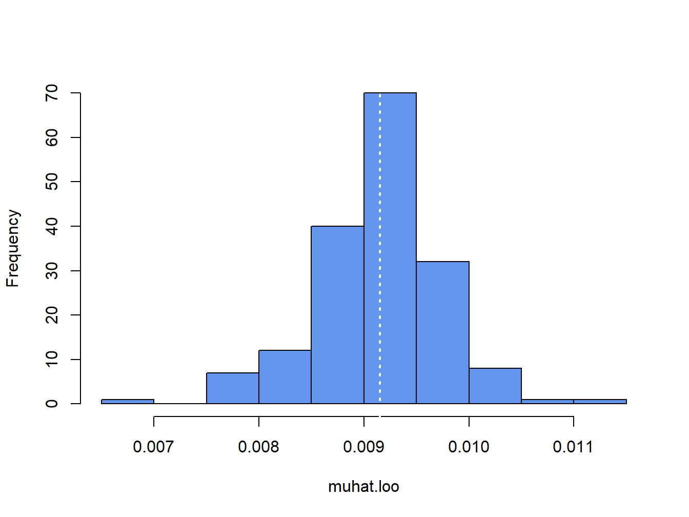
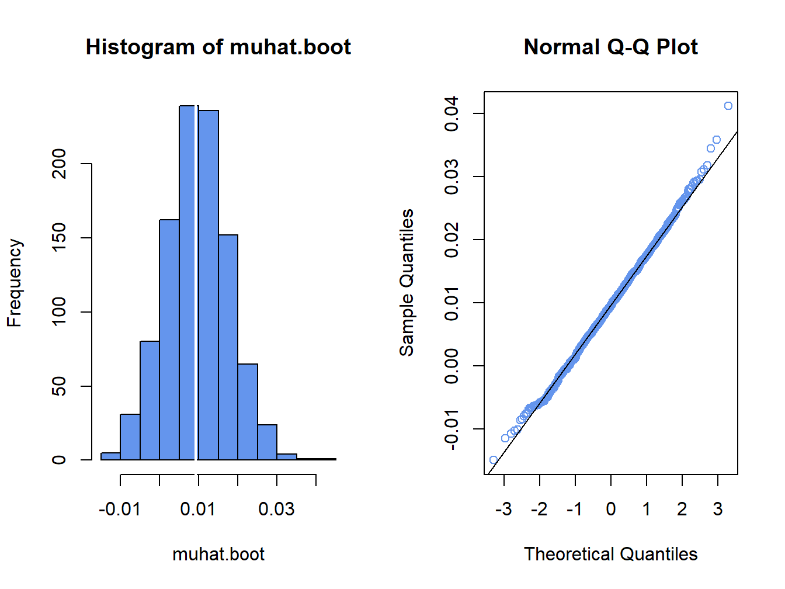
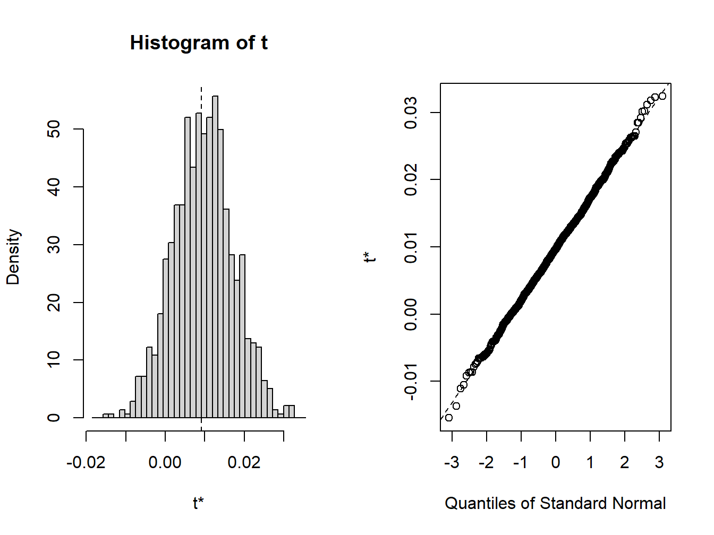
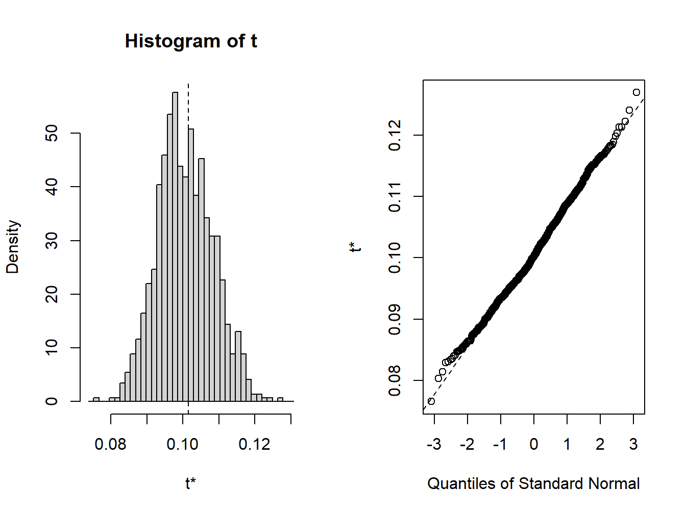
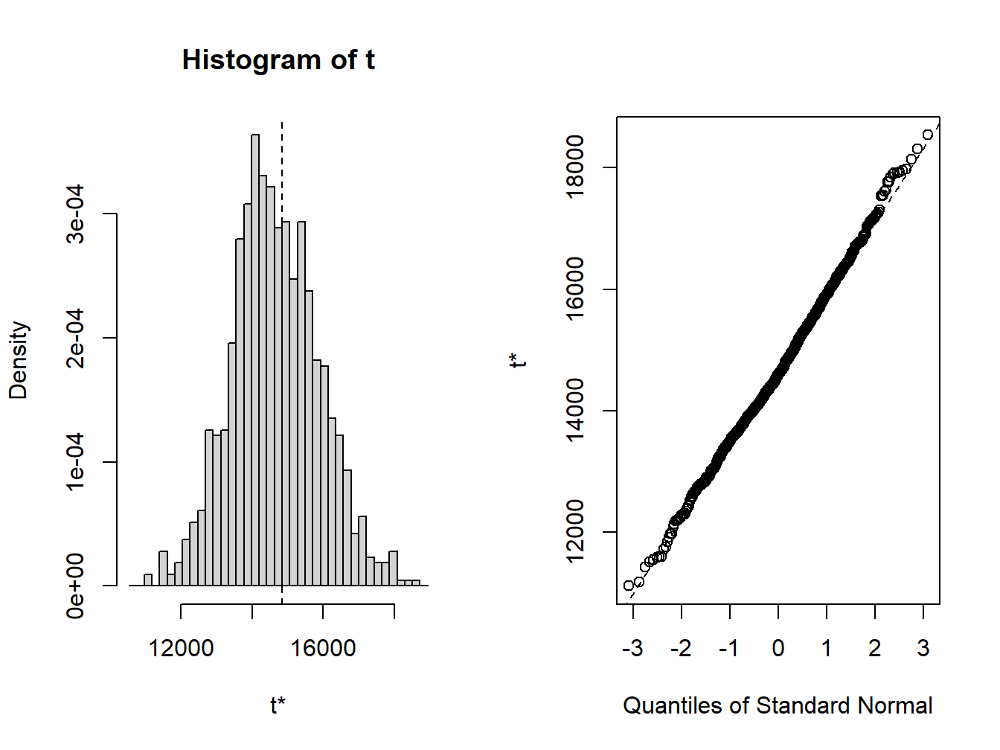
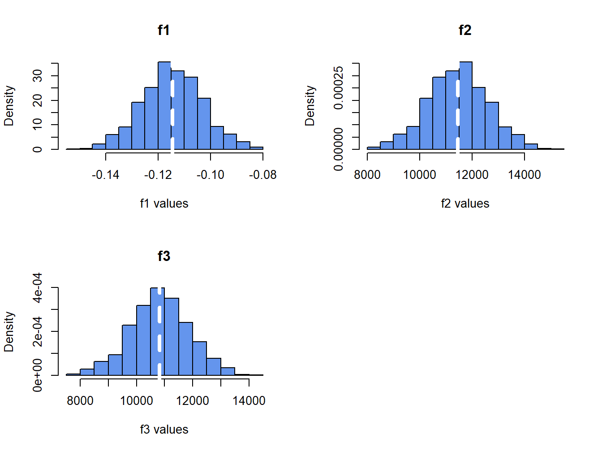

Code
msftPrices = to.monthly(msftDailyPrices, OHLC=FALSE)
smpl = "1998-01::2012-05"
msftPrices = msftPrices[smpl]
msftRetS = na.omit(Return.calculate(msftPrices, method="discrete"))
msftRetC = log(1 + msftRetS)Updated: September 5, 2026
Copyright © Eric Zivot 2026
In the previous chapter, I considered estimation of the parameters of the GWN model for asset returns and the construction of estimated standard errors and confidence intervals for the estimated parameters. In this chapter, I consider estimation of functions of the parameters of the GWN model, and the construction of estimated standard errors and confidence intervals for these estimates. This is an important topic as you are often more interested in a function of the GWN model parameters (e.g., \(\mathrm{VaR}_{\alpha}\)) than the GWN model parameters themselves. In order to do this, I introduce some new statistical tools including the analytic delta method based on asymptotic distribution theory, and two computer intensive resampling methods called the jackknife and the bootstrap.
The R packages I use in this chapter are boot, bootstrap, car, introcompfinr, and PerformanceAnalytics. Have these packages installed and loaded in R before replicating the chapter examples.
Consider the GWN model for returns (simple or continuously compounded):
\[\begin{align*} R_{it} & =\mu_{i}+\varepsilon_{it},\\ \{\varepsilon_{it}\}_{t=1}^{T} & \sim\mathrm{GWN}(0,\sigma^{2}), \\ \mathrm{cov}(\varepsilon_{it},\varepsilon_{js}) & =\left\{ \begin{array}{c} \sigma_{ij}\\ 0 \end{array}\right.\begin{array}{c} ~ t=s\\ t\neq s \end{array}. \end{align*}\]
Let \(\boldsymbol{\theta}\) denote a \(k \times 1\) vector of GWN model parameters from which you want to compute a function of interest (I drop the asset subscript \(i\) to simplify notation). Let \(f:R^k \rightarrow R\) be a continuous and differentiable function of \(\boldsymbol{\theta}\), and define \(\eta = f(\boldsymbol{\theta})\) as the scalar parameter of interest. To make things concrete, let \(\boldsymbol{\theta} = (\mu,\sigma)^{\prime}\). Consider the following functions of \(\boldsymbol{\theta}\):
\[ f_{1}(\boldsymbol{\theta}) = \mu + \sigma \times q_{\alpha}^{Z} = q_{\alpha}^R \tag{8.1}\] \[ f_{2}(\boldsymbol{\theta}) = -W_{0}\times \left( \mu + \sigma \times q_{\alpha}^{Z} \right) = W_{0} \times f_{1}(\boldsymbol{\theta}) = \mathrm{VaR}_{\alpha}^N \tag{8.2}\] \[ f_{3}(\boldsymbol{\theta}) = -W_{0}\times \left( \exp \left( \mu + \sigma \times q_{\alpha}^{Z} \right) - 1 \right) = W_{0} \times (\exp(f_{1}(\boldsymbol{\theta})) - 1) = \mathrm{VaR}_{\alpha}^{LN} \tag{8.3}\]
The first function Equation 8.1 is the \(\alpha\)-quantile, \(q_{\alpha}^R\), of the \(N(\mu,\sigma^{2})\) distribution for simple returns. The second function Equation 8.2 is \(\mathrm{VaR}_{\alpha}\) of an initial investment of \(W_{0}\) based on the normal distribution for simple returns. The third function Equation 8.3 is \(\mathrm{VaR}_{\alpha}\) based on the log-normal distribution for simple returns (normal distribution for continuously compounded returns). The first two functions are linear functions of the elements of \(\boldsymbol{\theta}\), and the third function is a nonlinear function of the elements of \(\boldsymbol{\theta}\).
Given the plug-in estimate of \(\boldsymbol{\theta}\), \(\hat{\boldsymbol{\theta}} = (\hat{\mu},\hat{\sigma})'\), I want to estimate each of the above functions of \(\boldsymbol{\theta}\), and construct estimated standard errors and confidence intervals.
Example 8.1 (Data for examples) For the examples in this chapter, I use data on monthly continuously compounded and simple returns for Microsoft over the period January 1998, through May 2012, from the introcompfinr package. The data is the same as that used in Chapter Chapter 5 and is constructed as follows:
msftPrices = to.monthly(msftDailyPrices, OHLC=FALSE)
smpl = "1998-01::2012-05"
msftPrices = msftPrices[smpl]
msftRetS = na.omit(Return.calculate(msftPrices, method="discrete"))
msftRetC = log(1 + msftRetS)The GWN model estimates for \(\mu_{msft}\) and \(\sigma_{msft}\), with estimated standard errors, are:
n.obs = nrow(msftRetC)
muhatC = mean(msftRetC)
sigmahatC = sd(msftRetC)
muhatS = mean(msftRetS)
sigmahatS = sd(msftRetS)
estimates = c(muhatC, sigmahatC, muhatS, sigmahatS)
se.muhatC = sigmahatC/sqrt(n.obs)
se.muhatS = sigmahatS/sqrt(n.obs)
se.sigmahatC = sigmahatC/sqrt(2*n.obs)
se.sigmahatS = sigmahatS/sqrt(2*n.obs)
stdErrors = c(se.muhatC, se.sigmahatC, se.muhatS, se.sigmahatS)
ans = rbind(estimates, stdErrors)
colnames(ans) = c("mu.cc", "sigma.cc", "mu.simple", "sigma.simple")
ans
#> mu.cc sigma.cc mu.simple sigma.simple
#> estimates 0.00413 0.1002 0.00915 0.10150
#> stdErrors 0.00764 0.0054 0.00774 0.00547\(\blacksquare\)
In Chapter Chapter 7, I used the plug-in principle to motivate estimators of the GWN model parameters \(\mu_i\) \(\sigma_{i}^2\), \(\sigma_{ij}\), and \(\rho_{ij}\). I can also use the plug-in principle to estimate functions of the GWN model parameters.
Definition 8.1 (Plug-in principle for functions of GWN model parameters) Let \(\boldsymbol{\theta}\) denote a \(k \times 1\) vector of GWN model parameters, and let \(\eta = f(\boldsymbol{\theta})\) where \(f:\mathbb{R}^k \rightarrow \mathbb{R}\) is a scalar function of \(\boldsymbol{\theta}\). Let \(\hat{\boldsymbol{\theta}}\) denote the plug-in estimator of \(\boldsymbol{\theta}\). Then the plug-in estimator of \(\eta\) is \(\hat{\eta} = f(\hat{\boldsymbol{\theta}})\).
Example 8.2 (Plug-in estimates of example functions for example data) Let \(W_0 = \$100,000\), and \(r_f = 0.03/12 = 0.0025\). Using the plug-in estimates of the GWN model parameters, the plug-in estimates of the functions Equation 8.1 - Equation 8.3 are:
W0 = 100000
r.f = 0.03/12
f1.hat = muhatS + sigmahatS*qnorm(0.05)
f2.hat = -W0*f1.hat
f3.hat = -W0*(exp(muhatC + sigmahatC*qnorm(0.05)) - 1)
fhat.vals = cbind(f1.hat, f2.hat, f3.hat)
colnames(fhat.vals) = c("f1", "f2", "f3")
rownames(fhat.vals) = "Estimate"
fhat.vals
#> f1 f2 f3
#> Estimate -0.158 15780 14846\(\blacksquare\)
Plug-in estimators of functions are random variables and are subject to estimation error. Just as you studied the statistical properties of the plug-in estimators of the GWN model parameters you can study the statistical properties of the plug-in estimators of functions of GWN model parameters.
As discussed in Chapter Chapter 7, a desirable finite sample property of an estimator \(\hat{\boldsymbol{\theta}}\) of \(\boldsymbol{\theta}\) is unbiasedness: on average over many hypothetical samples \(\hat{\boldsymbol{\theta}}\) is equal to \(\boldsymbol{\theta}\). When estimating \(f(\boldsymbol{\theta})\), unbiasedness of \(\hat{\boldsymbol{\theta}}\) may or may not carry over to \(f(\hat{\boldsymbol{\theta}})\).
Suppose \(f(\boldsymbol{\theta})\) is a linear function of the elements of \(\boldsymbol{\theta}\) so that
\[ f(\boldsymbol{\theta}) = a + b_1 \theta_1 + b_2 \theta_2 + \cdots + b_k \theta_k. \]
where \(a, b_1, b_2, \ldots b_k\) are constants. For example, the functions Equation 8.1 and Equation 8.2 are linear functions of the elements of \(\boldsymbol{\theta} = (\mu, \sigma)^{\prime}.\) Let \(\hat{\boldsymbol{\theta}}\) denote an estimator of \(\boldsymbol{\theta}\) and let \(f(\hat{\boldsymbol{\theta}})\) denote the plug-in estimator of \(f(\boldsymbol{\theta})\). If \(E[\hat{\boldsymbol{\theta}}]=\boldsymbol{\theta}\) for all elements of \(\boldsymbol{\theta}\) (\(\hat{\theta_i}\) is unbiased for \(\theta_i\), \(i=1,\ldots, k\)), then
\[\begin{align*} E[f(\hat{\boldsymbol{\theta}})] & = a + b_1 E[\hat{\theta_1}] + b_2 E[\hat{\theta_2}] + \cdots + b_k E[\hat{\theta_k}] \\ & = a + b_1 \theta_1 + b_2 \theta_2 + \cdots + b_k \theta_k = f(\boldsymbol{\theta}) \end{align*}\]
and so \(f(\hat{\boldsymbol{\theta}})\) is unbiased for \(f(\boldsymbol{\theta})\).
Now suppose \(f(\boldsymbol{\theta})\) is a nonlinear function of the elements of \(\boldsymbol{\theta}\). For example, the function Equation 8.3 is a nonlinear function of the elements of \(\boldsymbol{\theta} = (\mu, \sigma)^{\prime}.\) Then, in general, \(f(\hat{\boldsymbol{\theta}})\) is not unbiased for \(f(\boldsymbol{\theta})\) even if \(\hat{\boldsymbol{\theta}}\) is unbiased for \(\boldsymbol{\theta}\). The direction of the bias depends on the properties of \(f(\boldsymbol{\theta})\). If \(f(\cdot)\) is convex at the scalar parameter \(\theta\) or concave at \(\theta\) then you can say something about the direction of the bias in \(f(\hat{\theta})\).
Definition 8.2 (Convex function) Let \(\theta\) be a scalar parameter. A scalar function \(f(\theta)\) is convex (in two dimensions) if all points on a straight line connecting any two points on the graph of \(f(\theta)\) is above or on that graph. More formally, \(f(\theta)\) is convex if for all \(\theta_1\) and \(\theta_2\) and for all \(0 \le \alpha \le1\)
\[ f(\alpha \theta_1 + (1-\alpha) \theta_2) \le \alpha f(\theta_1) + (1 - \alpha)f(\theta_2) \]
For example, the function \(f(\theta)=\theta^2\) is a convex function. Another common convex function is \(\exp(\theta)\).
Definition 8.3 (Concave function) Let \(\theta\) be a scalar parameter. A scalar function \(f(\theta)\) is concave if \(-f(\theta)\) is convex.
For example, the function \(f(\theta) = - \theta^2\) is concave. Other common concave functions are \(log(\theta)\) and \(\sqrt{\theta}\).
Proposition 8.1 (Jensen’s inequality) Let \(\theta\) be a scalar parameter and let \(\hat{\theta}\) be an unbiased estimate of \(\theta\) so that \(E[\hat{\theta}]=\theta\). Let \(f(\theta)\) be a convex function of \(\theta\). Then \[ E[f(\hat{\theta)}] \ge f(E[\hat{\theta}]) = f(\theta). \]
Jensen’s inequality tells you that if \(f\) is convex (concave) and \(\hat{\theta}\) is unbiased then \(f(\hat{\theta})\) is positively (negatively) biased. For example, you know from Chapter Chapter 7 that \(\hat{\sigma}^2\) is unbiased for \(\sigma^2\). Now, \(\hat{\sigma} = f(\hat{\sigma}^2) = \sqrt{\hat{\sigma}^2}\) is a concave function of \(\hat{\sigma}\). From Jensen’s inequality, you know that \(\hat{\sigma}\) is negatively biased (i.e., too small).
\(\blacksquare\)
An important property of the plug-in estimators of the GWN model parameters is that they are consistent: as the sample size gets larger and larger the estimators get closer and closer to their true values and eventually equal their true values for an infinitely large sample.
Consistency also holds for plug-in estimators of functions of GWN model parameters. The justification comes from Slutsky’s Theorem.
Proposition 8.2 (Slutsky’s Theorem) Let \(\hat{\boldsymbol{\theta}}\) be consistent for \(\boldsymbol{\theta}\), and let \(f:\mathbb{R}^k \rightarrow \mathbb{R}\) be continuous at \(\boldsymbol{\theta}\). Then \(f(\hat{\boldsymbol{\theta}})\) is consistent for \(f(\boldsymbol{\theta})\).
The key condition on \(f(\boldsymbol{\theta})\) is continuity at \(\boldsymbol{\theta}\).1
Example 8.3 (Consistency of functions of GWN model parameters) All of the functions Equation 8.1 - Equation 8.3 are continuous at \(\boldsymbol{\theta} = (\mu, \sigma)'\). By Slutsky’s Theorem, all of the plug-in estimators of the functions are also consistent.
\(\blacksquare\)
Let \(\theta\) denote a scalar parameter of the GWN model for returns and let \(\hat{\theta}\) denote the plug-in estimator of \(\theta\). In Chapter Chapter 7 you learned that \(\hat{\theta}\) is asymptotically normally distributed
\[ \hat{\theta}\sim N(\theta,\widehat{\mathrm{se}}(\hat{\theta})^{2}), \]
for large enough \(T\), where \(\widehat{\mathrm{se}}(\hat{\theta})\) denotes the estimated standard error of \(\hat{\theta}.\) This result is justified by the CLT. The following proposition establishes the asymptotic distribution of the plug-in estimator of a function of \(\theta\) using a technique called the delta method.
Proposition 8.3 (The delta method) Let \(f(\theta)\) denote a real-valued continuous and differentiable scalar function of \(\theta\). Using a technique called the delta method, you can show that the plug-in estimator \(f(\hat{\theta})\) is also asymptotically normally distributed:
\[ f(\hat{\theta}) \sim N(f(\theta),\widehat{\mathrm{se}}(f(\hat{\theta}))^{2}), \]
for large enough \(T\), where \(\widehat{\mathrm{se}}(f(\hat{\theta}))\) is the estimated standard error for \(f(\hat{\theta})\).
The delta method shows you how to compute \(\widehat{\mathrm{se}}(f(\hat{\theta}))^2\):
\[ \widehat{\mathrm{se}}(f(\hat{\theta}))^{2} = f'(\hat{\theta})^2 \times \widehat{\mathrm{se}}(\hat{\theta})^{2}, \]
where \(f'(\hat{\theta})\) denotes the derivative of \(f(\theta)\) evaluated at \(\hat{\theta}\). Then,
\[ \widehat{\mathrm{se}}(f(\hat{\theta})) = \sqrt{f'(\hat{\theta})^2 \times \widehat{\mathrm{se}}(\hat{\theta})^{2}}. \tag{8.4}\]
Example 8.4 (Delta method standard error for \(\hat{\sigma}\)) The results from Chapter Chapter 7 showed, for large enough \(T\),
\[ \hat{\sigma}^2 \sim N(\sigma^2, \mathrm{se}(\hat{\sigma}^2)^2), ~ \hat{\sigma} \sim N(\sigma,\mathrm{se}(\hat{\sigma})^2), \]
where \(\mathrm{se}(\sigma^2)^2 = 2\sigma^4/T\) and \(\mathrm{se}(\sigma)^2 = \sigma^2/2T\). The formula for \(\mathrm{se}(\hat{\sigma})^2\) is the result of the delta method for the function \(f(\sigma^2)= \sqrt{\sigma^2}=\sigma\) applied to the asymptotic distribution of \(\hat{\sigma}^2\). To see this, first note that by the chain rule
\[ f'(\sigma^2) = \frac{1}{2} (\sigma^2)^{-1/2}, \]
so that \(f'(\sigma^2)^2 = \frac{1}{4}(\sigma^2)^{-1}\). Then,
\[\begin{align*} \mathrm{se}(f(\hat{\theta}))^{2} = f'(\sigma^2)^2 \times \mathrm{se}(\hat{\sigma}^2)^2 & = \frac{1}{4}(\sigma^2)^{-1} \times 2\sigma^4/T \\ & = \frac{1}{2}\sigma^2/T = \sigma^2/2T \\ & = \mathrm{se}(\hat{\sigma})^2. \end{align*}\]
The estimated squared standard error replaces \(\sigma^2\) with its estimate \(\hat{\sigma}^2\) and is given by \[ \widehat{\mathrm{se}}(\hat{\sigma}^2)^2 = \hat{\sigma}^2/2T. \]
\(\blacksquare\)
Now suppose \(\boldsymbol{\theta}\) is a \(k \times 1\) vector of GWN model parameters, and \(f:\mathbb{R}^k \rightarrow \mathbb{R}\) is a continuous and differentiable function of \(\boldsymbol{\theta}\). Define the \(k \times 1\) gradient function \(\mathbf{g}(\boldsymbol{\theta})\) as:
\[ \mathbf{g}(\boldsymbol{\theta}) = \frac{\partial f(\boldsymbol{\theta})}{\partial \boldsymbol{\theta}} = \left( \begin{array}{c} \frac{\partial f(\boldsymbol{\theta})}{\partial \theta_1} \\ \vdots \\ \frac{\partial f(\boldsymbol{\theta})}{\partial \theta_k} \end{array} \right). \]
Assume that \(\hat{\boldsymbol{\theta}}\) is asymptotically normally distributed:
\[ \hat{\boldsymbol{\theta}} \sim N(\boldsymbol{\theta}, \widehat{\mathrm{var}}(\hat{\boldsymbol{\theta}})), \]
where \(\widehat{\mathrm{var}}(\hat{\boldsymbol{\theta}})\) is the \(k \times k\) estimated variance-covariance matrix of \(\hat{\boldsymbol{\theta}}\). Then the delta method shows you that \(f(\hat{\boldsymbol{\theta}})\) is asymptotically normally distributed:
\[ f(\hat{\boldsymbol{\theta}}) \sim N(f(\boldsymbol{\theta}), \widehat{\mathrm{se}}(f(\hat{\boldsymbol{\theta}}))^{2}), \]
where
\[ \widehat{\mathrm{se}}(f(\hat{\boldsymbol{\theta}}))^{2} = \mathbf{g}(\hat{\boldsymbol{\theta}})'\widehat{\mathrm{var}}(\hat{\boldsymbol{\theta}})\mathbf{g}(\hat{\boldsymbol{\theta}}). \]
Example 8.5 (Delta method standard error for \(\hat{q}_{\alpha}^Z\)) Let \(\boldsymbol{\theta} = (\mu, \sigma)'\) and consider \(f_1(\boldsymbol{\theta}) = q_{\alpha}^R = \mu + \sigma q_{\alpha}^Z\) (normal simple return quantile). The gradient function \(\mathbf{g}_1(\boldsymbol{\theta})\) for \(f_1(\boldsymbol{\theta})\) is:
\[\begin{align*} \mathbf{g}_1(\boldsymbol{\theta}) = \frac{\partial f_1(\boldsymbol{\theta})}{\partial \boldsymbol{\theta}} = \left( \begin{array}{c} \frac{\partial f_1(\boldsymbol{\theta})}{\partial \mu} \\ \frac{\partial f_1(\boldsymbol{\theta})}{\partial \sigma} \end{array} \right) = \left( \begin{array}{c} 1 \\ q_{\alpha}^Z \end{array} \right). \end{align*}\]
Regarding \(\mathrm{var}(\hat{\boldsymbol{\theta}})\), recall from Chapter Chapter 7, in the GWN model: \[ \left(\begin{array}{c} \hat{\mu}\\ \hat{\sigma}^2 \end{array}\right)\sim N\left(\left(\begin{array}{c} \mu\\ \sigma^2 \end{array}\right),\left(\begin{array}{cc} \mathrm{se}(\hat{\mu})^{2} & 0\\ 0 & \mathrm{se}(\hat{\sigma}^2)^{2} \end{array}\right)\right) \]
for large enough \(T\). I show below, using the delta method, that
\[ \left(\begin{array}{c} \hat{\mu}\\ \hat{\sigma} \end{array}\right)\sim N\left(\left(\begin{array}{c} \mu\\ \sigma \end{array}\right),\left(\begin{array}{cc} \mathrm{se}(\hat{\mu})^{2} & 0\\ 0 & \mathrm{se}(\hat{\sigma})^{2} \end{array}\right)\right) \]
Hence,
\[ \mathrm{var}(\hat{\boldsymbol{\theta}}) = \left(\begin{array}{cc} \mathrm{se}(\hat{\mu})^{2} & 0\\ 0 & \mathrm{se}(\hat{\sigma})^{2} \end{array}\right) = \left(\begin{array}{cc} \frac{\sigma^2}{T} & 0\\ 0 & \frac{\sigma^2}{2T} \end{array}\right) \]
Then,
\[\begin{align*} \mathbf{g}_1(\boldsymbol{\theta})'\mathrm{var}(\hat{\boldsymbol{\theta}})\mathbf{g}_1(\boldsymbol{\theta}) &= \left( \begin{array}{cc} 1 & q_{\alpha}^Z \end{array} \right) \left(\begin{array}{cc} \mathrm{se}(\hat{\mu})^{2} & 0\\ 0 & \mathrm{se}(\hat{\sigma})^{2} \end{array}\right) \left( \begin{array}{c} 1 \\ q_{\alpha}^Z \end{array} \right) \\ &= \mathrm{se}(\hat{\mu})^{2} + (q_{\alpha}^Z)^2 \mathrm{se}(\hat{\sigma})^{2} \\ & =\frac{\sigma^{2}}{T}+\frac{\left(q_{\alpha}^{Z}\right)^{2}\sigma^{2}}{2T}\\ & =\frac{\sigma^{2}}{T}\left[1+\frac{1}{2}\left(q_{\alpha}^{Z}\right)^{2}\right] \\ &= \mathrm{se}(\hat{q}_{\alpha}^Z)^2. \end{align*}\]
The standard error for \(\hat{q}_{\alpha}^Z\) is: \[ \mathrm{se}(\hat{q}_{\alpha}^{R})=\sqrt{\mathrm{var}(\hat{q}_{\alpha}^{R})}=\frac{\sigma}{\sqrt{T}}\left[1+\frac{1}{2}\left(q_{\alpha}^{Z}\right)^{2}\right]^{1/2}. \tag{8.5}\]
The formula Equation 8.6 shows that \(\mathrm{se}(\hat{q}_{\alpha}^{R})\) increases with \(\sigma\) and \(q_{\alpha}^{Z}\), and decreases with \(T\). In addition, for fixed \(T\), \(\mathrm{se}(\hat{q}_{\alpha}^{R})\rightarrow\infty\) as \(\alpha\rightarrow0\) or as \(\alpha\rightarrow1\) because \(q_{\alpha}^{Z}\rightarrow-\infty\) as \(\alpha\rightarrow0\) and \(q_{\alpha}^{Z}\rightarrow\infty\) as \(\alpha\rightarrow1\). Hence, there is very large estimation error in \(\hat{q}_{\alpha}^{R}\) when \(\alpha\) is very close to zero or one (for fixed values of \(\sigma\) and \(T\)). This makes intuitive sense as you have very few observations in the extreme tails of the empirical distribution of the data for a fixed sample size and so you expect a larger estimation error.
Replacing \(\sigma\) with its estimate \(\hat{\sigma}\) gives the practically useful estimated standard error for \(\hat{q}_{\alpha}^{R}\):
\[ \widehat{\mathrm{se}}(\hat{q}_{\alpha}^{R})=\frac{\hat{\sigma}}{\sqrt{T}}\left[1+\frac{1}{2}\left(q_{\alpha}^{Z}\right)^{2}\right]^{1/2}. \tag{8.6}\]
Using the above results, the sampling distribution of \(\hat{q}_{\alpha}^{R}\) can be approximated by the normal distribution: \[ \hat{q}_{\alpha}^{R}\sim N(q_{\alpha}^{R},~\widehat{\mathrm{se}}(\hat{q}_{\alpha}^{R})^{2}), \tag{8.7}\]
for large enough \(T\). \(\blacksquare\)
Example 8.6 (Applying the delta method to \(\hat{q}_{\alpha}^{R}\) for Microsoft) The estimates of \(q_{\alpha}^{R}\), \(\mathrm{se}(\hat{q}_{\alpha}^{R})\), and 95% confidence intervals, for \(\alpha=0.05,\,0.01\) and \(0.001\), from the simple monthly returns for Microsoft are:
qhat = muhatS + sigmahatS*qnorm(c(0.05,0.01,0.001))
seQhat = (sigmahatS/sqrt(n.obs))*sqrt(1 + 0.5*qnorm(c(0.05,0.01,0.001))^2)
lowerQhat = qhat - 2*seQhat
upperQhat = qhat + 2*seQhat
width = upperQhat - lowerQhat
ans = cbind(qhat,seQhat,lowerQhat,upperQhat,width)
colnames(ans) = c("Estimates", "Std Errors", "2.5%", "97.5%", "Width")
rownames(ans) = c("q.05", "q.01", "q.001")
ans
#> Estimates Std Errors 2.5% 97.5% Width
#> q.05 -0.158 0.0119 -0.182 -0.134 0.0475
#> q.01 -0.227 0.0149 -0.257 -0.197 0.0596
#> q.001 -0.304 0.0186 -0.342 -0.267 0.0744For Microsoft the values of \(\widehat{\mathrm{se}}(\hat{q}_{\alpha}^{R})\) are about 1.2%, 1.5%, and 1.9% for \(\alpha=0.05\), \(\alpha=0.01\) and \(\alpha=0.001\), respectively. The 95% confidence interval widths increase with decreases in \(\alpha\) indicating more uncertainty about the true value of \(q_{\alpha}^R\) for smaller values of \(\alpha\). For example, the 95% confidence for interval \(q_{0.01}^R\) indicates that the true loss with \(1\%\) probability (one month out of 100 months) is between \(19.7\%\) and \(25.7\%\).
\(\blacksquare\)
Example 8.7 (Delta method standard errors for \(\widehat{\mathrm{VaR}}_{\alpha}^{N}\) and \(\widehat{\mathrm{VaR}}_{\alpha}^{LN}\)) Let \(\boldsymbol{\theta} = (\mu, \sigma)'\) and consider the functions \(f_2(\boldsymbol{\theta}) = \mathrm{VaR}_{\alpha}^N = -W_0(\mu + \sigma q_{\alpha}^Z)\) (normal VaR), and \(f_3(\boldsymbol{\theta}) = \mathrm{VaR}_{\alpha}^{LN} = -W_0(\exp((\mu + \sigma q_{\alpha}^Z)) - 1)\) (log-normal VaR). It is straightforward to show (see end-of-chapter exercises) that the gradient functions are:
\[\begin{align*} \mathbf{g}_2(\boldsymbol{\theta}) & = \frac{\partial f_2(\boldsymbol{\theta})}{\partial \boldsymbol{\theta}} = \left( \begin{array}{c} -W_0 \\ -W_0 q_{\alpha}^Z \end{array} \right), \\ \mathbf{g}_3(\boldsymbol{\theta}) & = \frac{\partial f_3(\boldsymbol{\theta})}{\partial \boldsymbol{\theta}} = \left( \begin{array}{c} -W_0 \exp(\mu + \sigma q_{\alpha}^Z) \\ -W_0 \exp(\mu + \sigma q_{\alpha}^Z)q_{\alpha}^Z \end{array} \right). \end{align*}\]
The delta method variances are:
\[\begin{align*} \mathbf{g}_2(\boldsymbol{\theta})'\mathrm{var}(\hat{\boldsymbol{\theta}})\mathbf{g}_2(\boldsymbol{\theta}) &= W_0^2 \mathrm{se}(\hat{q}_{\alpha}^R)^2 = \mathrm{se} \left( \widehat{\mathrm{VaR}}_{\alpha}^{N} \right )^2 \\ \mathbf{g}_3(\boldsymbol{\theta})'\mathrm{var}(\hat{\boldsymbol{\theta}})\mathbf{g}_3(\boldsymbol{\theta}) &= W_0^2 \exp(q_{\alpha}^R)^2 \mathrm{se}(\hat{q}_{\alpha}^R)^2 = \mathrm{se} \left( \widehat{\mathrm{VaR}}_{\alpha}^{LN} \right )^2. \end{align*}\]
The corresponding standard errors are:
\[\begin{align*} \mathrm{se} \left( \widehat{\mathrm{VaR}}_{\alpha}^{N} \right ) &= W_0 \mathrm{se}(\hat{q}_{\alpha}^R) \\ \mathrm{se} \left( \widehat{\mathrm{VaR}}_{\alpha}^{LN} \right ) &= W_0 \exp(q_{\alpha}^R) \mathrm{se}(\hat{q}_{\alpha}^R). \end{align*}\]
where
\[ \mathrm{se}(\hat{q}_{\alpha}^Z) = \sqrt{\frac{\sigma^{2}}{T}\left[1+\frac{1}{2}\left(q_{\alpha}^{Z}\right)^{2}\right]}. \]
Remarks:
\(\mathrm{se}(\widehat{\mathrm{VaR}}_{\alpha}^{N})\) and \(\mathrm{se}(\widehat{\mathrm{VaR}}_{\alpha}^{LN})\) increase with \(W_{0}\), \(\sigma\), and \(q_{\alpha}^{Z}\), and decrease with \(T\).
For fixed values of \(W_{0}\), \(\sigma\), and \(T\), \(\mathrm{se}(\widehat{\mathrm{VaR}}_{\alpha}^N)\) and \(\mathrm{se}(\widehat{\mathrm{VaR}}_{\alpha}^{LN})\) become very large as \(\alpha\) approaches zero. That is, for very small loss probabilities you will have very imprecise estimates of \(\mathrm{VaR}_{\alpha}^N\) and \(\mathrm{VaR}_{\alpha}^{LN}\).
The practically useful estimated standard errors replace the unknown value of \(q_{\alpha}^R\) with its estimated value \(\hat{q}_{\alpha}^R\) and are given by:
\[ \mathrm{\widehat{se}} \left( \widehat{\mathrm{VaR}}_{\alpha}^{N} \right ) = W_0 \mathrm{\widehat{se}}(\hat{q}_{\alpha}^R) \tag{8.8}\] \[ \mathrm{\widehat{se}} \left( \widehat{\mathrm{VaR}}_{\alpha}^{LN} \right ) = W_0 \exp(\hat{q}_{\alpha}^R) \mathrm{\widehat{se}}(\hat{q}_{\alpha}^R) \tag{8.9}\]
\(\blacksquare\)
Example 8.8 (Applying the delta method to \(\widehat{VaR}_{\alpha}^{N}\) and \(\widehat{VaR}_{\alpha}^{LN}\) for Microsoft) Consider a \(\$100,000\) investment for one month in Microsoft. The estimates of \(\mathrm{VaR}_{\alpha}^{N}\), its standard error, and \(95\%\) confidence intervals, for \(\alpha=0.05\), \(\alpha=0.01\), and \(\alpha=0.001\) are:
VaR.N = -qhat*W0
seVaR.N = W0*seQhat
lowerVaR.N = VaR.N - 2*seVaR.N
upperVaR.N = VaR.N + 2*seVaR.N
width = upperVaR.N - lowerVaR.N
ans = cbind(VaR.N, seVaR.N, lowerVaR.N, upperVaR.N, width)
colnames(ans) = c("Estimate", "Std Error", "2.5%", "97.5%", "Width")
rownames(ans) = c("VaR.N.05", "VaR.N.01", "VaR.N.001")
ans
#> Estimate Std Error 2.5% 97.5% Width
#> VaR.N.05 15780 1187 13405 18154 4748
#> VaR.N.01 22696 1490 19717 25676 5959
#> VaR.N.001 30450 1860 26730 34169 7439The estimated values of \(\mathrm{VaR}_{.05}^N\), \(\mathrm{VaR}_{.01}^N\), and \(\mathrm{VaR}_{.001}^N\) are \(\$15,780\), \(\$22,696\), and \(\$30,450\) respectively, with estimated standard errors of \(\$1,187\), \(\$1,490\), and \(\$1,860\). The estimated standard errors are fairly small compared with the estimated VaR values, so you can say that VaR is estimated fairly precisely here. Notice that the estimated standard error for \(\mathrm{VaR}_{.001}\) is about \(56\%\) larger than the estimated standard error for \(\mathrm{VaR}_{.05}^N\) indicating you have much less precision for estimating VaR for very small values of \(\alpha\).
The estimates of \(\mathrm{VaR}_{\alpha}^{LN}\) and its standard error for \(\alpha=0.05\) and \(\alpha=0.01\) are:
qhat.c = muhatC + sigmahatC*qnorm(c(0.05,0.01,0.001))
seQhat.c = (sigmahatC/sqrt(n.obs))*sqrt(1 + 0.5*qnorm(c(0.05,0.01,0.001))^2)
VaR.LN = -W0*(exp(qhat.c)-1)
seVaR.LN = W0*exp(qhat.c)*seQhat.c
lowerVaR.LN = VaR.LN - 2*seVaR.LN
upperVaR.LN = VaR.LN + 2*seVaR.LN
width = upperVaR.LN - lowerVaR.LN
ans = cbind(VaR.LN, seVaR.LN, lowerVaR.LN, upperVaR.LN, width)
colnames(ans) = c("Estimate", "Std Error", "2.5%", "97.5%", "Width")
rownames(ans) = c("VaR.LN.05", "VaR.LN.01", "VaR.LN.001")
ans
#> Estimate Std Error 2.5% 97.5% Width
#> VaR.LN.05 14846 998 12850 16842 3992
#> VaR.LN.01 20467 1170 18128 22807 4680
#> VaR.LN.001 26329 1353 23623 29034 5411The estimates of \(\mathrm{VaR}_{\alpha}^{LN}\) (and its standard error) are slightly smaller than the estimates of \(\mathrm{VaR}_{\alpha}^{N}\) (and its standard error) due to the positive skewness in the log-normal distribution. \(\blacksquare\)
The delta method is an advanced statistical technique and requires a bit of calculus to implement, especially for nonlinear vector-valued functions. It can be easy to make mistakes when working out the math! Fortunately, in R there is an easy way to implement the delta method that does not require you to work out the math. The car function deltaMethod implements the delta method for scalar valued functions numerically, utilizing the stats function D() which implements symbolic derivatives. The arguments expected by deltaMethod are:
args(car:::deltaMethod.default)
#> function (object, g., vcov., func = g., constants, level = 0.95,
#> rhs = NULL, singular.ok = FALSE, ..., envir = parent.frame())
#> NULLHere, object is the vector of named estimated parameters, \(\hat{\boldsymbol{\theta}}\), g. is a quoted string that is the function of the parameter estimates to be evaluated, \(f(\boldsymbol{\theta})\), and vcov is the named estimated covariance matrix of the coefficient estimates, \(\widehat{\mathrm{var}}(\hat{\boldsymbol{\theta}})\). The function returns an object of class “deltaMethod” for which there is a print method. The “deltaMethod” object is essentially a data.frame with columns giving the parameter estimate(s), the delta method estimated standard error(s), and lower and upper confidence limits. The following example illustrates how to use deltaMethod for the example functions.
Example 8.9 (Numerical delta method standard errors for example data) I first create the named inputs \(\hat{\boldsymbol{\theta}}\) and \(\widehat{\mathrm{var}}(\hat{\boldsymbol{\theta}})\) from the GWN model for simple returns:
thetahatS = c(muhatS, sigmahatS)
names(thetahatS) = c("mu", "sigma")
var.thetahatS = matrix(c(se.muhatS^2,0,0,se.sigmahatS^2), 2, 2, byrow=TRUE)
rownames(var.thetahatS) = colnames(var.thetahatS) = names(thetahatS)
thetahatS
#> mu sigma
#> 0.00915 0.10150
var.thetahatS
#> mu sigma
#> mu 5.99e-05 0.00e+00
#> sigma 0.00e+00 2.99e-05I do the same for the inputs from the GWN model for continuously compounded returns:
thetahatC = c(muhatC, sigmahatC)
names(thetahatC) = c("mu", "sigma")
var.thetahatC = matrix(c(se.muhatC^2,0,0,se.sigmahatC^2), 2, 2, byrow=TRUE)
rownames(var.thetahatC) = colnames(var.thetahatC) = names(thetahatC)It is important to name the elements in thetahat and var.thetahat as these names will be used in defining \(f(\boldsymbol{\theta})\). To implement the numerical delta method for the normal quantile, you need to supply a quoted string specifying the function \(f_1(\boldsymbol{\theta}) = \mu + \sigma q_{\alpha}^Z\). Here I use the string "mu+sigma*q.05", where q.05 = qnorm(0.05). For, \(\alpha = 0.05\) the R code is:
q.05 = qnorm(0.05)
dm1 = deltaMethod(thetahatS, "mu+sigma*q.05", var.thetahatS)
class(dm1)
#> [1] "deltaMethod" "data.frame"The returned object dm1 is of class “deltaMethod”, inhereting from “data.frame”, and has named columns:
names(dm1)
#> [1] "Estimate" "SE" "2.5 %" "97.5 %"The print method shows the results of applying the delta method:
dm1
#> Estimate SE 2.5 % 97.5 %
#> mu + sigma * q.05 -0.1578 0.0119 -0.1811 -0.13The results match the analytic calculations performed above.2
The delta method for the normal VaR function \(f_2(\boldsymbol{\theta})\) is:
dm2 = deltaMethod(thetahatS, "-W0*(mu+sigma*q.05)", var.thetahatS)
dm2
#> Estimate SE 2.5 % 97.5 %
#> -W0 * (mu + sigma * q.05) 15780 1187 13453 18106The delta method for the log-normal VaR function \(f_3(\boldsymbol{\theta})\) is:
dm3 = deltaMethod(thetahatC, "-W0*(exp(mu+sigma*q.05)-1)", var.thetahatC)
dm3
#> Estimate SE 2.5 % 97.5 %
#> -W0 * (exp(mu + sigma * q.05) - 1) 14846 998 12890 16802Let \(\boldsymbol{\theta}\) denote a \(k \times 1\) vector of GWN model parameters. For example, \(\boldsymbol{\theta} = (\mu, \sigma^2)'\). Assume that \(\hat{\boldsymbol{\theta}}\) is asymptotically normally distributed: \[ \hat{\boldsymbol{\theta}} \sim N( \boldsymbol{\theta}, \widehat{\mathrm{var}}(\boldsymbol{\theta})), \] for large enough \(T\) where \(\widehat{\mathrm{var}}(\boldsymbol{\theta})\) is the \(k \times k\) variance-covariance matrix of \(\hat{\boldsymbol{\theta}}\). Sometimes you need to consider the asymptotic distribution of a vector-valued function of \(\boldsymbol{\theta}\). Let \(\mathbf{f}:\mathbb{R}^k \rightarrow \mathbb{R}^j\) where \(j \le k\) be a continuous and differentiable function, and define the \(j \times 1\) vector \(\boldsymbol{\eta}=\mathbf{f}(\boldsymbol{\theta})\). It is useful to express \(\boldsymbol{\eta}\) as:
\[ \boldsymbol{\eta} = \begin{pmatrix} \eta_1 \\ \eta_2 \\ \vdots \\ \eta_j \end{pmatrix} = \begin{pmatrix} f_1(\boldsymbol{\theta}) \\ f_2(\boldsymbol{\theta}) \\ \vdots \\ f_j(\boldsymbol{\theta}) \end{pmatrix}. \]
Example 8.10 (Example vector functions of GWN model parameters) Let \(\boldsymbol{\theta}=(\sigma_1^2, \sigma_2^2)'\), and define the \(2 \times 1\) vector of volatilities: \(\boldsymbol{\eta} = \mathbf{f}(\boldsymbol{\theta})=(\sigma_1, \sigma_2)'\). Then, \(\eta_1 = f_1(\boldsymbol{\theta}) = \sqrt{\sigma_2^2}\) and \(\eta_2 = f_2(\boldsymbol{\theta}) = \sqrt{\sigma_2^2}\).
\(\blacksquare\)
Define the \(j \times k\) Jacobian matrix: \[ \mathbf{G}(\boldsymbol{\theta})' = \frac{\partial \mathbf{f}(\boldsymbol{\theta})}{\partial \boldsymbol{\theta}'} = \begin{pmatrix} \frac{\partial f_1(\boldsymbol{\theta})}{\partial \theta_1} & \frac{\partial f_1(\boldsymbol{\theta})}{\partial \theta_2} & \cdots & \frac{\partial f_1(\boldsymbol{\theta})}{\partial \theta_k} \\ \frac{\partial f_2(\boldsymbol{\theta})}{\partial \theta_1} & \frac{\partial f_2(\boldsymbol{\theta})}{\partial \theta_2} & \cdots & \frac{\partial f_2(\boldsymbol{\theta})}{\partial \theta_k} \\ \vdots & \vdots & \ldots & \vdots \\ \frac{\partial f_j(\boldsymbol{\theta})}{\partial \theta_1} & \frac{\partial f_j(\boldsymbol{\theta})}{\partial \theta_2} & \cdots & \frac{\partial f_j(\boldsymbol{\theta})}{\partial \theta_k} \\ \end{pmatrix} \tag{8.10}\] Then, by the delta method, the asymptotic normal distribution of \(\hat{\boldsymbol{\eta}} = \mathbf{f}(\hat{\boldsymbol{\theta}})\) is: \[ \hat{\eta} \sim N(\eta, \widehat{\mathrm{var}}(\hat{\eta})), \] where \[ \widehat{\mathrm{var}}(\hat{\eta}) = \mathbf{G}(\hat{\boldsymbol{\theta}})'\widehat{\mathrm{var}}(\hat{\boldsymbol{\theta}})\mathbf{G}(\hat{\boldsymbol{\theta}}). \tag{8.11}\]
Example 8.11 (Asymptotic distributions of example functions) Consider the first example function where \(\boldsymbol{\theta} = (\sigma_1^2,\sigma_2^2)'\) and \(\boldsymbol{\eta} = \mathbf{f}(\boldsymbol{\theta})=(\sigma_1, \sigma_2)'\). Now, using the chain-rule:
\[\begin{align*} \frac{\partial f_1(\boldsymbol{\theta})}{\partial \sigma_1^2} & = \frac{1}{2}\sigma_1^{-1}, ~ \frac{\partial f_1(\boldsymbol{\theta})}{\partial \sigma_2^2} = 0 \\ \frac{\partial f_2(\boldsymbol{\theta})}{\partial \sigma_1^2} & = 0, ~ \frac{\partial f_2(\boldsymbol{\theta})}{\partial \sigma_2^2} = \frac{1}{2}\sigma_1^{-1} \end{align*}\]
The Jacobian matrix is
\[ \mathbf{G}(\boldsymbol{\theta})' = \begin{pmatrix} \frac{1}{2}\sigma_1^{-1} & 0 \\ 0 & \frac{1}{2}\sigma_2^{-1} \end{pmatrix} \]
From Chapter Chapter 7, Proposition 7.9,
\[ \widehat{\mathrm{var}}(\hat{\boldsymbol{\theta}}) = \frac{1}{T}\begin{pmatrix} 2\hat{\sigma}_1^4 & 2\hat{\sigma}_{12}^2 \\ 2\hat{\sigma}_{12}^2 & 2\hat{\sigma}_2^4 \end{pmatrix} \] Then
\[\begin{align*} \widehat{\mathrm{var}}(\hat{\eta}) & = \mathbf{G}(\hat{\boldsymbol{\theta}})'\widehat{\mathrm{var}}(\hat{\boldsymbol{\theta}})\mathbf{G}(\hat{\boldsymbol{\theta}}) \\ & = \begin{pmatrix} \frac{1}{2}\hat{\sigma}_1^{-1} & 0 \\ 0 & \frac{1}{2}\hat{\sigma}_2^{-1} \end{pmatrix} \frac{1}{T}\begin{pmatrix} 2\hat{\sigma}_1^4 & 2\hat{\sigma}_{12}^2 \\ 2\hat{\sigma}_{12}^2 & 2\hat{\sigma}_2^4 \end{pmatrix} \begin{pmatrix} \frac{1}{2}\hat{\sigma}_1^{-1} & 0 \\ 0 & \frac{1}{2}\hat{\sigma}_2^{-1} \end{pmatrix} \\ &= \frac{1}{T} \begin{pmatrix} \frac{1}{2}\hat{\sigma}_1^2 & \frac{1}{2}\hat{\sigma}_{12}^2 \hat{\sigma}_{1}^{-1} \hat{\sigma}_{2}^{-1}\\ \frac{1}{2}\hat{\sigma}_{12}^2 \hat{\sigma}_{1}^{-1} \hat{\sigma}_{2}^{-1} & \frac{1}{2}\hat{\sigma}_2^2 \end{pmatrix} = \frac{1}{T} \begin{pmatrix} \frac{1}{2}\hat{\sigma}_1^2 & \frac{1}{2}\hat{\sigma}_{12} \hat{\rho}_{12} \\ \frac{1}{2}\hat{\sigma}_{12} \hat{\rho}_{12} & \frac{1}{2}\hat{\sigma}_2^2 \end{pmatrix}. \end{align*}\]
\(\blacksquare\)
The delta method deduces the asymptotic distribution of \(f(\hat{\boldsymbol{\theta}})\) using a first order Taylor series approximation of \(f(\hat{\boldsymbol{\theta}})\) evaluated at the true value \(\boldsymbol{\theta}\). For simplicity, assume that \(\theta\) is a scalar parameter. Then, the first order Taylor series expansion gives
\[\begin{align*} f(\hat{\theta}) & = f(\theta) + f'(\theta)(\hat{\theta} - \theta) + \text{remainder} \\ & = f(\theta) + f'(\theta)\hat{\theta} + f'(\theta)\theta + \text{remainder} \\ & \approx f(\theta) + f'(\theta)\hat{\theta} + f'(\theta)\theta \end{align*}\]
The first order Taylor series expansion shows that \(f(\hat{\theta})\) is an approximate linear function of the random variable \(\hat{\theta}\). The values \(\theta\), \(f(\theta)\), and \(f'(\theta)\) are constants. Assuming that, for large enough T,
\[ \hat{\theta}\sim N(\theta,\widehat{\mathrm{se}}(\hat{\theta})^{2}), \]
it follows that
\[ f(\hat{\theta}) \sim N(f(\theta), f'(\theta)^2 \widehat{\mathrm{se}}(\hat{\theta})^{2}) \]
Since \(\hat{\theta}\) is consistent for \(\theta\) you can replace \(f'(\theta)^2\) with \(f'(\hat{\theta})^2\) giving the practically useful result
\[ f(\hat{\theta}) \sim N(f(\theta), f'(\hat{\theta})^2 \widehat{\mathrm{se}}(\hat{\theta})^{2}) \]
As described in the previous sections, the delta method can be used to produce analytic expressions for standard errors of functions of estimated parameters that are asymptotically normally distributed. The formulas are specific to each function and are approximations that rely on large samples and the validity of the Central Limit Theorem to be accurate.
Alternatives to the analytic asymptotic distributions of estimators and the delta method are computer intensive resampling methods such as the jackknife and the bootstrap. These resampling methods can be used to produce numerical estimated standard errors for estimators and functions of estimators without the use of mathematical formulas. Most importantly, these jackknife and bootstrap standard errors are: (1) easy to compute, and (2) often numerically very close to the analytic standard errors based on CLT approximations. In some cases the bootstrap standard errors can even be more reliable than asymptotic approximations.
There are many advantages of the jackknife and bootstrap over analytic formulas. The most important are the following:
Let \(\theta\) denote a scalar parameter of interest. It could be a scalar parameter of the GWN model (e.g. \(\mu\) or \(\sigma\)) or it could be a scalar function of the parameters of the GWN model (e.g., VaR). Let \(\hat{\theta}\) denote the plug-in estimator of \(\theta\). The goal is to compute a numerical estimated standard error for \(\hat{\theta}\), \(\widehat{\mathrm{se}}(\hat{\theta})\), using the jackknife resampling method.
The jackknife resampling method utilizes \(T\) resamples of the original data \(\left\{ R_t \right\}_{t=1}^{T}\). The resamples are created by leaving out a single observation. For example, the first jackknife resample leaves out the first observation and is given by \(\left\{ R_t \right\}_{t=2}^{T}\). This sample has \(T-1\) observations. In general, the \(t^{th}\) jackknife resample leaves out the \(t^{th}\) return \(R_{t}\) for \(t \le T\). Now, on each of the \(t=1,\ldots, T\) jackknife resamples you compute an estimate of \(\theta\). Denote this jackknife estimate \(\hat{\theta}_{-t}\) to indicate that \(\theta\) is estimated using the resample that omits observation \(t\). The estimator \(\hat{\theta}_{-t}\) is called the leave-one-out estimator of \(\theta\). Computing \(\hat{\theta}_{-t}\) for \(t=1,\ldots, T\) gives \(T\) leave-one-out estimators \(\left\{ \hat{\theta}_{-t} \right\}_{t=1}^{T}\).
The jackknife estimator of \(\widehat{\mathrm{se}}(\hat{\theta})\) is the scaled standard deviation of \(\left\{ \hat{\theta}_{-t} \right\}_{t=1}^{T}\):
\[ \widehat{\mathrm{se}}_{jack}(\hat{\theta}) = \sqrt{ \frac{T-1}{T}\sum_{t=1}^T (\hat{\theta}_{-t} - \bar{\theta})^2 }, \tag{8.12}\]
where \(\bar{\theta} = T^{-1}\sum_{t=1}^T \hat{\theta}_{-t}\) is the sample mean of \(\left\{ \hat{\theta}_{-t} \right\}_{t=1}^{T}\). The estimator Equation 8.12 is easy to compute and does not require any analytic calculations from the asymptotic distribution of \(\hat{\theta}\).
The intuition for the jackknife standard error formula can be illustrated by considering the jackknife standard error estimate for the sample mean \(\hat{\theta} = \hat{\mu}\). You know that the analytic estimated squared standard error for \(\hat{\mu}\) is
\[ \widehat{\mathrm{se}}(\hat{\mu})^2 = \frac{\hat{\sigma}^2}{T} = \frac{1}{T} \frac{1}{T-1} \sum_{t=1}^T (R_t - \hat{\mu})^2. \]
Now consider the jackknife squared standard error for \(\hat{\mu}\):
\[ \widehat{\mathrm{se}}_{jack}(\hat{\mu})^2= \frac{T-1}{T}\sum_{t=1}^T (\hat{\mu}_{-t} - \bar{\mu})^2, \]
where \(\bar{\mu} = T^{-1}\sum_{t=1}^T \hat{\mu}_{-t}\). Here, I will show that \(\widehat{\mathrm{se}}(\hat{\mu})^2 = \widehat{\mathrm{se}}_{jack}(\hat{\mu})^2\).
First, note that
\[\begin{align*} \hat{\mu}_{-t} & = \frac{1}{T-1}\sum_{j \ne t} R_j = \frac{1}{T-1} \left( \sum_{j=1}^T R_j - R_t \right) \\ &= \frac{1}{T-1} \left( T \hat{\mu} - R_t \right) \\ &= \frac{T}{T-1}\hat{\mu} - \frac{1}{T-1}R_t. \end{align*}\]
Next, plugging in the above to the definition of \(\bar{\mu}\) I get
\[\begin{align*} \bar{\mu} &= \frac{1}{T} \sum_{j=1}^T \hat{\mu}_{-t} = \frac{1}{T}\sum_{t=1}^T \left( \frac{T}{T-1}\hat{\mu} - \frac{1}{T-1}R_t \right) \\ &= \frac{1}{T-1} \sum_{t=1}^T \hat{\mu} - \frac{1}{T}\frac{1}{T-1} \sum_{t=1}^T R_t \\ &= \frac{T}{T-1} \hat{\mu} - \frac{1}{T-1} \hat{\mu} \\ &= \hat{\mu} \left( \frac{T}{T-1} - \frac{1}{T-1} \right) \\ &= \hat{\mu}. \end{align*}\]
Hence, the sample mean of \(\hat{\mu}_{-t}\) is \(\hat{\mu}\). Then I can write
\[\begin{align*} \hat{\mu}_{-t} - \bar{\mu} & = \hat{\mu}_{-t} - \hat{\mu} \\ & = \frac{T}{T-1}\hat{\mu} - \frac{1}{T-1}R_t - \hat{\mu} \\ &= \frac{T}{T-1}\hat{\mu} - \frac{1}{T-1}R_t - \frac{T-1}{T-1}\hat{\mu} \\ &= \frac{1}{T-1}\hat{\mu} - \frac{1}{T-1}R_t \\ &= \frac{1}{T-1}(\hat{\mu} - R_t). \end{align*}\]
Using the above I can write
\[\begin{align*} \widehat{\mathrm{se}}_{jack}(\hat{\mu})^2 &= \frac{T-1}{T}\sum_{t=1}^T (\hat{\mu}_{-t} - \bar{\mu})^2 \\ &= \frac{T-1}{T}\left(\frac{1}{T-1}\right)^2 \sum_{t=1}^T (\hat{\mu} - R_t)^2 \\ &= \frac{1}{T}\frac{1}{T-1} \sum_{t=1}^T (\hat{\mu} - R_t)^2 \\ &= \frac{1}{T} \hat{\sigma}^2 \\ &= \widehat{\mathrm{se}}(\hat{\mu})^2. \end{align*}\]
Example 8.12 (Jackknife standard error for \(\hat{\mu}\) for Microsoft) You can compute the leave-one-out estimates \(\{\hat{\mu}_{-t}\}_{t=1}^T\) using a simple for loop as follows:
n.obs = length(msftRetS)
muhat.loo = rep(0, n.obs)
for(i in 1:n.obs) {
muhat.loo[i] = mean(msftRetS[-i])
}In the above loop, msftRetS[-i] extracts all observations except observation \(i\). The mean of the leave-one-out estimates is
mean(muhat.loo)
#> [1] 0.00915which is the sample mean of msftRetS. It is informative to plot a histogram of the leave-one-out estimates:

The white dotted line is at the point \(\hat{\mu} = 0.00915\). The jackknife estimated standard error is the scaled standard deviation of the \(T\) \(\hat{\mu}_{-t}\) values:3
se.jack.muhat = sqrt(((n.obs - 1)^2)/n.obs)*sd(muhat.loo)
se.jack.muhat
#> [1] 0.00774This value is exactly the same as the analytic standard error:
se.muhatS
#> [1] 0.00774You can also compute jackknife estimated standard errors using the bootstrap function jackknife:
library(bootstrap)
muhat.jack = jackknife(coredata(msftRetS), mean)
names(muhat.jack)
#> [1] "jack.se" "jack.bias" "jack.values" "call"By default, jackknife() takes as input a vector of data and the name of an R function and returns a list with components related to the jackknife procedure. The component jack.values contains the leave-one-out estimators, and the component jack.se gives you the jackknife estimated standard error:
muhat.jack$jack.se
#> [1] 0.00774\(\blacksquare\)
The fact that the jackknife standard error estimate for \(\hat{\mu}\) equals the analytic standard error is motivates using the jackknife to compute standard errors for general estimators. For estimated parameters other than \(\hat{\mu}\), and general estimated functions of GWN model parameters, the jackknife standard errors are often numerically very close to the delta method standard errors. The following example illustrates this point for the example functions Equation 8.1 - Equation 8.3.
Example 8.13 (Jackknife standard errors for plug-in estimators of example functions) Here, I use the bootstrap function jackknife() to compute jackknife estimated standard errors for the plug-in estimates of the example functions Equation 8.1 - Equation 8.3 and I compare the jackknife standard errors with the delta method standard errors. To use jackknife() with user-defined functions involving multiple parameters you must create the function such that the first input is an integer vector of index observations and the second input is the data. For example, a function for computing Equation 8.1 to be passed to jackknife() is:
theta.f1 = function(x, xdata) {
mu.hat = mean(xdata[x, ])
sigma.hat = sd(xdata[x, ])
fun.hat = mu.hat + sigma.hat*qnorm(0.05)
fun.hat
}To compute the jackknife estimated standard errors for the estimate of Equation 8.1 use:
f1.jack = jackknife(1:n.obs, theta=theta.f1, coredata(msftRetS))
ans = cbind(f1.jack$jack.se, dm1$SE)
colnames(ans) = c("Jackknife", "Delta Method")
rownames(ans) = "f1"
ans
#> Jackknife Delta Method
#> f1 0.0133 0.0119Here, you see that the estimated jackknife standard error for \(f_1(\hat{\boldsymbol{\theta}})\) is very close to the delta method standard error computed earlier.
To compute the jackknife estimated standard error for \(f_2(\hat{\boldsymbol{\theta}})\) use:
theta.f2 = function(x, xdata, W0) {
mu.hat = mean(xdata[x, ])
sigma.hat = sd(xdata[x, ])
fun.hat = -W0*(mu.hat + sigma.hat*qnorm(0.05))
fun.hat
}
f2.jack = jackknife(1:n.obs, theta=theta.f2, coredata(msftRetS), W0)
ans = cbind(f2.jack$jack.se, dm2$SE)
colnames(ans) = c("Jackknife", "Delta Method")
rownames(ans) = "f2"
ans
#> Jackknife Delta Method
#> f2 1329 1187Again, the jackknife standard error is close to the delta method standard error.
To compute the jackknife estimated standard error for \(f_3(\hat{\boldsymbol{\theta}})\) use:
theta.f3 = function(x, xdata, W0) {
mu.hat = mean(xdata[x, ])
sigma.hat = sd(xdata[x, ])
fun.hat = -W0*(exp(mu.hat + sigma.hat*qnorm(0.05)) - 1)
fun.hat
}
f3.jack = jackknife(1:n.obs, theta=theta.f3, coredata(msftRetC), W0)
ans = cbind(f3.jack$jack.se, dm3$SE)
colnames(ans) = c("Jackknife", "Delta Method")
rownames(ans) = "f3"
ans
#> Jackknife Delta Method
#> f3 1315 998For log-normal VaR, the jackknife standard error is a bit larger than the delta method standard error.
Here, the jackknife and delta method standard errors are very close. \(\blacksquare\)
The jackknife can also be used to compute an estimated variance matrix of a vector-valued estimate of parameters. Let \(\boldsymbol{\theta}\) denote a \(k \times 1\) vector of GWN model parameters (e.g., \(\boldsymbol{\theta}=(\mu,\sigma)'\)), and let \(\hat{\boldsymbol{\theta}}\) denote the plug-in estimate of \(\boldsymbol{\theta}\). Let \(\hat{\boldsymbol{\theta}}_{-t}\) denote the leave-one-out estimate of \(\boldsymbol{\theta}\), and \(\bar{\boldsymbol{\theta}}=T^{-1}\sum_{t=1}^T \hat{\boldsymbol{\theta}}_{-t}\). Then the jackknife estimate of the \(k \times k\) variance matrix \(\widehat{\mathrm{var}}(\hat{\boldsymbol{\theta}})\) is the scaled sample covariance of \(\{\hat{\boldsymbol{\theta}}_{-t}\}_{t=1}^T\):
\[ \widehat{\mathrm{var}}_{jack}(\hat{\boldsymbol{\theta}}) = \frac{T-1}{T} \sum_{t=1}^T (\hat{\boldsymbol{\theta}}_{-t} - \bar{\boldsymbol{\theta}})(\hat{\boldsymbol{\theta}}_{-t} - \bar{\boldsymbol{\theta}})'. \tag{8.13}\]
The jackknife estimated standard errors for the elements of \(\hat{\boldsymbol{\theta}}\) are given by the square root of the diagonal elements of \(\widehat{\mathrm{var}}_{jack}(\hat{\boldsymbol{\theta}})\).
The same principle works for computing the estimated variance matrix of a vector of functions of GWN model parameters. Let \(\mathbf{f}:R^k \rightarrow R^l\) with \(l \le k\) and define \(\boldsymbol{\eta} = \mathbf{f}(\boldsymbol{\theta})\) denote a \(l \times 1\) vector of functions of GWN model parameters. Let \(\hat{\eta}=f(\hat{\boldsymbol{\theta}})\) denote the plug-in estimator of \(\boldsymbol{\eta}\). Let \(\hat{\boldsymbol{\eta}}_{-t}\) denote the leave-one-out estimate of \(\boldsymbol{\eta}\), and \(\bar{\boldsymbol{\eta}}=T^{-1}\sum_{t=1}^T \hat{\boldsymbol{\eta}}_{-t}\). Then the jackknife estimate of the \(l \times l\) variance matrix \(\widehat{\mathrm{var}}(\hat{\boldsymbol{\eta}})\) is the scaled sample covariance of \(\{\hat{\boldsymbol{\eta}}_{-t}\}_{t=1}^T\):
\[ \widehat{\mathrm{var}}_{jack}(\hat{\boldsymbol{\eta}}) = \frac{T-1}{T} \sum_{t=1}^T (\hat{\boldsymbol{\eta}}_{-t} - \bar{\boldsymbol{\eta}})(\hat{\boldsymbol{\eta}}_{-t} - \bar{\boldsymbol{\eta}})'. \tag{8.14}\]
Example 8.14 (Jackknife variance estimate for \(\hat{\boldsymbol{\theta}}=(\hat{\mu}, \hat{\sigma})'\) for Microsoft simple returns) The bootstrap function jackknife() function only works for scalar-valued parameter estimates, so you have to compute the jackknife variance estimate by hand using a for loop. The R code is:
n.obs = length(msftRetS)
muhat.loo = rep(0, n.obs)
sigmahat.loo = rep(0, n.obs)
for(i in 1:n.obs) {
muhat.loo[i] = mean(msftRetS[-i])
sigmahat.loo[i] = sd(msftRetS[-i])
}
thetahat.loo = cbind(muhat.loo, sigmahat.loo)
colnames(thetahat.loo) = c("mu", "sigma")
varhat.jack = (((n.obs-1)^2)/n.obs)*var(thetahat.loo)
varhat.jack
#> mu sigma
#> mu 5.99e-05 1.49e-05
#> sigma 1.49e-05 6.12e-05The jackknife variance estimate is somewhat close to the analytic estimate:
var.thetahatS
#> mu sigma
#> mu 5.99e-05 0.00e+00
#> sigma 0.00e+00 2.99e-05Since the first element of \(\hat{\boldsymbol{\theta}}\) is \(\hat{\mu}\), the (1,1) elements of the two variance matrix estimates match exactly. However, the varhat.jack has non-zero off diagonal elements and the (2,2) element corresponding to \(\hat{\sigma}\) is considerably bigger than (2,2) element of the analytic estimate. Converting var.thetahatS to an estimated correlation matrix gives:
cov2cor(varhat.jack)
#> mu sigma
#> mu 1.000 0.246
#> sigma 0.246 1.000Here, you see that the jackknife shows a small positive correlation between \(\hat{\mu}\) and \(\hat{\sigma}\) whereas the analytic matrix shows a zero correlation. \(\blacksquare\)
The jackknife gets its name because it is a useful statistical device.4 The main advantages (pros) of the jacknife are:
It is a good “quick and dirty” method for computing numerical estimated standard errors of estimates that does not rely on asymptotic approximations.
The jackknife estimated standard errors are often close to the delta method standard errors.
This jackknife, however, has some limitations (cons). The main limitations are:
It can be computationally burdensome for very large samples (e.g., if used with ultra high frequency data).
It does not work well for non-smooth functions such as empirical quantiles.
It is not well suited for computing confidence intervals.
It is not as accurate as the bootstrap.
In this section, I describe the easiest and most common form of the bootstrap: the nonparametric bootstrap. As you shall see, the nonparametric bootstrap procedure is very similar to a Monte Carlo simulation experiment. The main difference is how the random data is generated. In a Monte Carlo experiment, the random data are computer simulated observations from an assumed model (e.g., the GWN model). In the nonparametric bootstrap, the random data is created by resampling with replacement from the original data.
The procedure for the nonparametric bootstrap of an estimate \(\hat{\theta}\) of a scalar parameter \(\theta\) is as follows:
This procedure is very similar to the procedure used to perform a Monte Carlo experiment described in Chapter Chapter 7. The main difference is how the hypothetical samples are created. With the nonparametric bootstrap, the hypothetical samples are created by resampling with replacement from the original data. In this regard the bootstrap treats the sample as if it were the population. This ensures that the bootstrap samples inherit the same distribution as the original data – whatever that distribution may be. If the original data is normally distributed, then the nonparametric bootstrap samples will also be normally distributed. If the data is Student’s t distributed, then the nonparametric bootstrap samples will be Student’s t distributed. With Monte Carlo simulation, the hypothetical samples are simulated under an assumed model and distribution. This requires one to specify values for the model parameters and the distribution from which to simulate.
The nonparametric bootstrap can be used to estimate the bias of an estimator \(\hat{\theta}\) using the bootstrap estimates {\(\hat{\theta}_{1}^{*},\ldots,\hat{\theta}_{B}^{*}\)}. The key idea is to treat the empirical distribution (i.e., histogram) of the bootstrap estimates {\(\hat{\theta}_{1}^{*},\ldots,\hat{\theta}_{B}^{*}\)} as an approximate to the unknown distribution of \(\hat{\theta}.\)
Recall, the bias of an estimator is defined as
\[ E[\hat{\theta}]-\theta. \]
The bootstrap estimate of bias is given by
\[ \begin{aligned} \widehat{\mathrm{bias}}_{boot}(\hat{\theta},\theta)= \bar{\theta}^{\ast} - \hat{\theta} = \frac{1}{B}\sum_{j=1}^{\ B}\hat{\theta}_{j}^{\ast}-\hat{\theta.}\\ \text{(bootstrap mean - estimate)} \end{aligned} \tag{8.15}\]
The bootstrap bias estimate Equation 8.15 is the difference between the mean of the bootstrap estimates of \(\theta\) and the sample estimate of \(\theta\). This is similar to the Monte Carlo estimate of bias discussed in Chapter Chapter 7. However, the Monte Carlo estimate of bias is the difference between the mean of the Monte Carlo estimates of \(\theta\) and the true value of \(\theta.\) The bootstrap estimate of bias does not require knowing the true value of \(\theta\). Effectively, the bootstrap treats the sample estimate \(\hat{\theta}\) as the population value \(\theta\) and the bootstrap mean \(\bar{\theta}^{\ast} = \frac{1}{B}\sum_{j=1}^{\ B}\hat{\theta}_{j}^{\ast}\) as an approximation to \(E[\hat{\theta}]\). Here, \(\widehat{\mathrm{bias}}_{boot}(\hat{\theta},\theta)=0\) if the center of the histogram of {\(\hat{\theta}_{1}^{*},\ldots,\hat{\theta}_{B}^{*}\)} is at \(\hat{\theta}.\)
Given the bootstrap estimate of bias Equation 8.15, you can compute a bias-adjusted estimate:
\[ \hat{\theta}_{adj} = \hat{\theta} - (\bar{\theta}^{\ast} - \hat{\theta}) = 2\hat{\theta} - \bar{\theta}^{\ast} \tag{8.16}\]
if the bootstrap estimate of bias is large, it may be tempting to use the bias-adjusted estimate Equation 8.16 in place of the original estimate. This is generally not done in practice because the bias adjustment introduces extra variability into the estimator. So what use is the bootstrap bias estimate? It provides information to you that your estimate contains bias (or not) and this information can influence your decision making based on the estimate.
for a scalar estimate \(\hat{\theta}\), the bootstrap estimate of \(\widehat{\mathrm{se}}(\hat{\theta}\)) is given by the sample standard deviation of the bootstrap estimates {\(\hat{\theta}_{1}^{*},\ldots,\hat{\theta}_{B}^{*}\)}:
\[ \widehat{\mathrm{se}}_{boot}(\hat{\theta})=\sqrt{\frac{1}{B-1}\sum_{j=1}^{B}\left(\hat{\theta}_{j}^{\ast} - \bar{\theta}^{\ast} \right)^{2}}. \tag{8.17}\]
where \(\bar{\theta}^{\ast} = \frac{1}{B}\sum_{j=1}^{\ B}\hat{\theta}_{j}^{\ast}\). Here, \(\widehat{\mathrm{se}}_{boot}(\hat{\theta})\) is the size of a typical deviation of a bootstrap estimate, \(\hat{\theta}^{*}\), from the mean of the bootstrap estimates (typical deviation from the middle of the histogram of the bootstrap estimates). This is very closely related to the Monte Carlo estimate of \(\widehat{\mathrm{se}}(\hat{\theta}\)), which is the sample standard deviation of the estimates of \(\theta\) from the Monte Carlo samples.
For a \(k \times 1\) vector estimate \(\hat{\theta}\), the bootstrap estimate of \(\widehat{\mathrm{var}}(\hat{\theta})\) is
\[ \widehat{\mathrm{var}}(\hat{\theta}) = \frac{1}{B-1}\sum_{j=1}^B (\hat{\theta}_{j}^{\ast} - \bar{\theta}^{\ast})(\hat{\theta}_{j}^{\ast} - \bar{\theta}^{\ast})'. \tag{8.18}\]
In addition to providing standard error estimates, the bootstrap is commonly used to compute confidence intervals for scalar parameters. There are several ways of computing confidence intervals with the bootstrap and which confidence interval to use in practice depends on the characteristics of the distribution of the bootstrap estimates {\(\hat{\theta}_{1}^{*},\ldots,\hat{\theta}_{B}^{*}\)}.
If the bootstrap distribution appears to be normal then you can compute a 95% confidence interval for \(\theta\) using two simple methods. The first method mimics the rule-of-thumb that is justified by the CLT to compute a 95% confidence interval but uses the bootstrap standard error estimate Equation 8.17:
\[ \hat{\theta}\pm2\times\widehat{\mathrm{se}}_{boot}(\hat{\theta}) = [\hat{\theta} - 2\times \widehat{\mathrm{se}}_{boot}(\hat{\theta}), ~ \hat{\theta} + 2\times \widehat{\mathrm{se}}_{boot}(\hat{\theta})]. \tag{8.19}\]
The 95% confidence interval Equation 8.19 is called the normal approximation 95% confidence interval.
The second method directly uses the distribution of the bootstrap estimates {\(\hat{\theta}_{1}^{*},\ldots,\hat{\theta}_{B}^{*}\)} to form a 95% confidence interval:
\[ [\hat{q}_{.025}^{*},\,\hat{q}_{.975}^{*}], \tag{8.20}\]
where \(\hat{q}_{.025}^{*}\) and \(\hat{q}_{.975}^{*}\) are the 2.5% and 97.5% empirical quantiles of {\(\hat{\theta}_{1}^{*},\ldots,\hat{\theta}_{B}^{*}\)}, respectively. By construction, 95% of the bootstrap estimates lie in the quantile-based interval Equation 8.20. This 95% confidence interval is called the bootstrap percentile 95% confidence interval.
The main advantage of Equation 8.20 over Equation 8.19 is transformation invariance. This means that if Equation 8.20 is a 95% confidence interval for \(\theta\) and \(f(\theta)\) is a monotonic function of \(\theta\) then \([f(\hat{q}_{.025}^{*}),\,f(\hat{q}_{.975}^{*})]\) is a 95% confidence interval for \(f(\theta)\). The interval Equation 8.20 can also be asymmetric whereas Equation 8.19 is symmetric.
The bootstrap normal approximation and percentile 95% confidence intervals Equation 8.19 and Equation 8.20 will perform well (i.e., will have approximately correct coverage probability) if the bootstrap distribution looks normally distributed. However, if the bootstrap distribution is asymmetric then these 95% confidence intervals may have coverage probability different from 95%, especially if the asymmetry is substantial. The basic shape of the bootstrap distribution can be visualized by the histogram of {\(\hat{\theta}_{1}^{*},\ldots,\hat{\theta}_{B}^{*}\)}, and the normality of the distribution can be visually evaluated using the normal QQ-plot of {\(\hat{\theta}_{1}^{*},\ldots,\hat{\theta}_{B}^{*}\)}. If the histogram is asymmetric and/or not bell-shaped or if the normal QQ-plot is not linear then normality is suspect and the confidence intervals Equation 8.20 and Equation 8.19 may be inaccurate.
If the bootstrap distribution is asymmetric then it is recommended to use Efron’s bias and skewness adjusted bootstrap percentile confidence (BCA) interval. The details of how to compute the BCA interval are a bit complicated, and so are omitted, and the interested reader is referred to Chapter 10 of Hansen (2011) for a good explanation. Suffice it to say that the 95% BCA method adjusts the 2.5% and 97.5% quantiles of the bootstrap distribution for bias and skewness. The BCA confidence interval can be computed using the boot function boot.ci() with optional argument type="bca".6
The nonparametric bootstrap procedure is easy to perform in R. You can implement the procedure by “brute force” in very much the same way as you perform a Monte Carlo experiment. In this approach you program all parts of the bootstrapping procedure. Alternatively, you can use the R package boot which contains functions for automating certain parts of the bootstrapping procedure.
In the brute force implementation you program all parts of the bootstrap procedure. This typically involves three steps:
sample() to create \(\{r_{1}^{*},r_{2}^{*},\ldots,r_{T}^{*}\}\). Do this \(B\) times.mean() and sd(), respectively.hist() and qqnorm(), respectively, to see if the bootstrap distribution looks normal.Typically steps 1 and 2 are performed inside a for loop or within the R function apply().
In step 1 sampling with replacement for the original data is performed with the R function sample(). To illustrate, consider sampling with replacement from the \(5\times1\) return vector:
r = c(0.1,0.05,-0.02,0.03,-0.04)
r
#> [1] 0.10 0.05 -0.02 0.03 -0.04Recall, in R you can extract elements from a vector by subsetting based on their location, or index, in the vector. Since the vector r has five elements, its index is the integer vector 1:5. Then to extract the first, second and fifth elements of r use the index vector c(1, 2, 5):
r[c(1, 2, 5)]
#> [1] 0.10 0.05 -0.04Using this idea, you can extract a random sample (of any given size) with replacement from r by creating a random sample with replacement of the integers \(\{1,2,\ldots,5\}\) and using this set of integers to extract the sample from r. The R fucntion sample() can be used to do this process. When you pass a positive integer value n to sample(), with the optional argument replace=TRUE, it returns a random sample from the set of integers from \(1\) to n. For example, to create a random sample with replacement of size 5 from the integers\(\{1,2,\ldots,5\}\) use:7
set.seed(123)
idx = sample(5, replace=TRUE)
idx
#> [1] 3 3 2 2 3You can then get a random sample with replacement from the vector r by subsetting using the index vector idx:
r[idx]
#> [1] -0.02 -0.02 0.05 0.05 -0.02This two step process is automated when you pass a vector of observations to sample():
set.seed(123)
sample(r, replace=TRUE)
#> [1] -0.02 -0.02 0.05 0.05 -0.02Example 8.15 (Brute force nonparametric bootstrap of GWN model in R) Consider using the nonparametric bootstrap to compute estimates of the bias and standard error for \(\hat{\mu}\) in the GWN model for Microsoft. The R code for the brute force “for loop” to implement the nonparametric bootstrap is:
B = 1000
muhat.boot = rep(0, B)
n.obs = nrow(msftRetS)
set.seed(123)
for (i in 1:B) {
boot.data = sample(msftRetS, n.obs, replace=TRUE)
muhat.boot[i] = mean(boot.data)
}The bootstrap bias estimate is:
mean(muhat.boot) - muhatS
#> [1] 0.000483which is very close to zero and confirms that \(\hat{\mu}\) is unbiased. The bootstrap standard error estimate is
sd(muhat.boot)
#> [1] 0.00796and is equal (to three decimals) to the analytic standard error estimate computed earlier. This confirms that the nonparametric bootstrap accurately computes \(\widehat{\mathrm{se}}(\hat{\mu}).\) Figure 8.2 shows the histogram and normal QQ-plot of the bootstrap estimates created with:
par(mfrow=c(1,2))
hist(muhat.boot, col="cornflowerblue")
abline(v=muhatS, col="white", lwd=2)
qqnorm(muhat.boot, col="cornflowerblue")
qqline(muhat.boot) 
The distribution of the bootstrap estimates looks normal. As a result, the bootstrap 95% confidence interval for \(\mu\) has the form:
se.boot = sd(muhat.boot)
lower = muhatS + se.boot
upper = muhatS - se.boot
ans = cbind(muhatS, se.boot, lower, upper)
colnames(ans)=c("Estimate", "Std Error", "2.5%", "97.5%")
rownames(ans) = "mu"
ans
#> Estimate Std Error 2.5% 97.5%
#> mu 0.00915 0.00796 0.0171 0.0012\(\blacksquare\)
It is important to keep in mind that the bootstrap resampling algorithm draws random samples from the observed data. In the example above, the random number generator in R was initially set with set.seed(123). If the seed is set to a different integer, say 345, then the \(B=1,000\) bootstrap samples will be different and you will get different numerical results for the bootstrap bias and estimated standard error. How different these results will be depends on number of bootstrap samples \(B\) and the statistic \(\hat{\theta}\) being bootstrapped. Generally, the smaller is \(B\) the more variable the bootstraps results will be. It is good practice to repeat the bootstrap analysis with several different random number seeds to see how variable the results are. If the results vary considerably for different random number seeds then it is advised to increase the number of bootstrap simulations \(B\). It is common to use \(B=1,000\) for routine calculations, and \(B=10,000\) for final results.
The R package boot implements a variety of bootstrapping techniques including the basic non-parametric bootstrap described above. The boot package was written to accompany the textbook Bootstrap Methods and Their Application by (Davison and Hinkley 1997). The two main functions in boot are boot() and boot.ci(), respectively. The boot() function implements the bootstrap for a statistic computed from a user-supplied function. The boot.ci() function computes bootstrap confidence intervals given the output from the boot() function.
The arguments to boot() are:
library(boot)
args(boot)
#> function (data, statistic, R, sim = "ordinary", stype = c("i",
#> "f", "w"), strata = rep(1, n), L = NULL, m = 0, weights = NULL,
#> ran.gen = function(d, p) d, mle = NULL, simple = FALSE, ...,
#> parallel = c("no", "multicore", "snow"), ncpus = getOption("boot.ncpus",
#> 1L), cl = NULL)
#> NULLwhere data is a data object (typically a vector or matrix but can be a time series object too), statistic is a use-specified function to compute the statistic of interest, and R is the number of bootstrap replications. The remaining arguments are not important for the basic non-parametric bootstrap. The function assigned to the argument statistic has to be written in a specific form, which is illustrated in the next example. The boot() function returns an object of class boot for which there are print and plot methods.
The arguments to boot.ci() are
args(boot.ci)
#> function (boot.out, conf = 0.95, type = "all", index = 1L:min(2L,
#> length(boot.out$t0)), var.t0 = NULL, var.t = NULL, t0 = NULL,
#> t = NULL, L = NULL, h = function(t) t, hdot = function(t) rep(1,
#> length(t)), hinv = function(t) t, ...)
#> NULLwhere boot.out is an object of class boot, conf specifies the confidence level, and type is a subset from c("norm", "basic", "stud", "perc", "bca") indicating the type of confidence interval to compute. The choices norm, perc, and “bca” compute the normal confidence interval Equation 8.19, the percentile confidence interval Equation 8.20, and the BCA confidence interval, respectively. The remaining arguments are not important for the computation of these bootstrap confidence intervals.
Example 8.16 (Nonparametric bootstrap of GWN model using the R package boot) To use the boot() function to implement the bootstrap for \(\hat{\mu},\) a function must be specified to compute \(\hat{\mu}\) for each bootstrap sample. The function must have two arguments: x and idx. Here, x represents the original data and idx represents the random integer index (created internally by boot()) to subset x for each bootstrap sample. For example, a function to be passed to boot() for \(\hat{\mu}\) is
mean.boot = function(x, idx) {
# arguments:
# x data to be resampled
# idx vector of scrambled indices created by boot() function
# value:
# ans mean value computed using resampled data
ans = mean(x[idx])
ans
}To implement the nonparametric bootstrap for \(\hat{\mu}\) with 999 samples use
set.seed(123)
muhat.boot = boot(msftRetS, statistic = mean.boot, R=999)
class(muhat.boot)
#> [1] "boot"
names(muhat.boot)
#> [1] "t0" "t" "R" "data" "seed" "statistic"
#> [7] "sim" "call" "stype" "strata" "weights"The returned object muhat.boot is of class boot. The component t0 is the sample estimate \(\hat{\mu}\), and the component t is a \(999\times1\) matrix containing the bootstrap estimates \(\{\hat{\mu}_{1}^{*},\ldots,\hat{\mu}_{999}^{*}\}\). The print method shows the sample estimate, the bootstrap bias and the bootstrap standard error:
muhat.boot
#>
#> ORDINARY NONPARAMETRIC BOOTSTRAP
#>
#>
#> Call:
#> boot(data = msftRetS, statistic = mean.boot, R = 999)
#>
#>
#> Bootstrap Statistics :
#> original bias std. error
#> t1* 0.00915 0.000482 0.00758These statistics can be computed directly from the components of muhat.boot
c(muhat.boot$t0,mean(muhat.boot$t) - muhat.boot$t0, sd(muhat.boot$t))
#> [1] 0.009153 0.000482 0.007584A histogram and nornal QQ-plot of the bootstrap values, shown in Figure 8.3, can be created using the plot method
plot(muhat.boot)
bootNormal, percentile, and bias-adjusted (bca) percentile 95% confidence intervals can be computed using
boot.ci(muhat.boot, conf=0.95, type=c("norm", "perc", "bca"))
#> BOOTSTRAP CONFIDENCE INTERVAL CALCULATIONS
#> Based on 999 bootstrap replicates
#>
#> CALL :
#> boot.ci(boot.out = muhat.boot, conf = 0.95, type = c("norm",
#> "perc", "bca"))
#>
#> Intervals :
#> Level Normal Percentile BCa
#> 95% (-0.0062, 0.0235 ) (-0.0057, 0.0245 ) (-0.0062, 0.0239 )
#> Calculations and Intervals on Original ScaleBecause the bootstrap distribution looks normal, the normal, percentile, and bca confidence intervals are very similar.
The GWN model estimate \(\hat{\sigma}\) can be “bootstrapped” in a similar fashion. First, I write a function to compute \(\hat{\sigma}\) for each bootstrap sample:
sd.boot = function(x, idx) {
ans = sd(x[idx])
ans
}Then I call boot() with statistic=sd.boot
set.seed(123)
sigmahat.boot = boot(msftRetS, statistic = sd.boot, R=999)
sigmahat.boot
#>
#> ORDINARY NONPARAMETRIC BOOTSTRAP
#>
#>
#> Call:
#> boot(data = msftRetS, statistic = sd.boot, R = 999)
#>
#>
#> Bootstrap Statistics :
#> original bias std. error
#> t1* 0.101 -0.000783 0.00764
The bootstrap distribution, shown in Figure 8.4, looks a bit non-normal. The 95% confidences intervals are computed using
boot.ci(sigmahat.boot, conf=0.95, type=c("norm", "perc", "bca"))
#> BOOTSTRAP CONFIDENCE INTERVAL CALCULATIONS
#> Based on 999 bootstrap replicates
#>
#> CALL :
#> boot.ci(boot.out = sigmahat.boot, conf = 0.95, type = c("norm",
#> "perc", "bca"))
#>
#> Intervals :
#> Level Normal Percentile BCa
#> 95% ( 0.0873, 0.1173 ) ( 0.0864, 0.1162 ) ( 0.0892, 0.1200 )
#> Calculations and Intervals on Original Scale
#> Some BCa intervals may be unstableYou see that all of these intervals are quite similar. \(\blacksquare\)
Example 8.17 (Nonparametric bootstrap for example functions) The real power of the bootstrap procedure comes when you apply it to plug-in estimates of functions like Equation 8.1-Equation 8.3 for which there are no easy analytic formulas for estimating bias and standard errors. In this situation, the bootstrap procedure easily computes numerical estimates of the bias, standard error, and 95% confidence interval. All you need is an R function for computing the plug-in function estimate in a form suitable for boot(). The R functions for the example functions are:
f1.boot = function(x, idx, alpha=0.05) {
q = mean(x[idx]) + sd(x[idx])*qnorm(alpha)
q
}
f2.boot = function(x, idx, alpha=0.05, w0=100000) {
q = mean(x[idx]) + sd(x[idx])*qnorm(alpha)
VaR = -w0*q
VaR
}
f3.boot = function(x, idx, alpha=0.05, w0=100000) {
q = mean(x[idx]) + sd(x[idx])*qnorm(alpha)
VaR = -(exp(q) - 1)*w0
VaR
}The functions \(f_1\), \(f_2\), and \(f_3\) have the additional argument alpha which specifies the tail probability for the quantile, and the functions \(f_2\), and \(f_3\) have the additional argument w0 for the initial wealth invested.
To compute the nonparametric bootstrap for \(f_1\) with \(\alpha=0.05\) use:
set.seed(123)
f1.bs = boot(msftRetS, statistic = f1.boot, R=999)
f1.bs
#>
#> ORDINARY NONPARAMETRIC BOOTSTRAP
#>
#>
#> Call:
#> boot(data = msftRetS, statistic = f1.boot, R = 999)
#>
#>
#> Bootstrap Statistics :
#> original bias std. error
#> t1* -0.158 0.00177 0.0124Here, the bootstrap estimate of bias is small and the bootstrap estimated standard error is similar to the delta method and jackknife standard errors.
The bootstrap distribution looks normal, and the three methods for computing 95% confidence intervals are essentially the same:
boot.ci(f1.bs, type=c("norm", "perc", "bca"))
#> BOOTSTRAP CONFIDENCE INTERVAL CALCULATIONS
#> Based on 999 bootstrap replicates
#>
#> CALL :
#> boot.ci(boot.out = f1.bs, type = c("norm", "perc", "bca"))
#>
#> Intervals :
#> Level Normal Percentile BCa
#> 95% (-0.184, -0.135 ) (-0.181, -0.132 ) (-0.189, -0.138 )
#> Calculations and Intervals on Original Scale
#> Some BCa intervals may be unstableTo compute the nonparametric bootstrap for \(f_2\) with \(\alpha=0.05\) and \(W_0=\$100,000\) use:
set.seed(123)
f2.bs = boot(msftRetS, statistic = f2.boot, R=999)
f2.bs
#>
#> ORDINARY NONPARAMETRIC BOOTSTRAP
#>
#>
#> Call:
#> boot(data = msftRetS, statistic = f2.boot, R = 999)
#>
#>
#> Bootstrap Statistics :
#> original bias std. error
#> t1* 15780 -177 1244The bootstrap estimate of bias is small and the bootstrap estimated standard error is similar to the delta method and jackknife standard errors.
The bootstrap distribution looks normal, and the three bootstrap 95% confidence intervals are all very similar:
boot.ci(f2.bs, type=c("norm", "perc", "bca"))
#> BOOTSTRAP CONFIDENCE INTERVAL CALCULATIONS
#> Based on 999 bootstrap replicates
#>
#> CALL :
#> boot.ci(boot.out = f2.bs, type = c("norm", "perc", "bca"))
#>
#> Intervals :
#> Level Normal Percentile BCa
#> 95% (13518, 18395 ) (13161, 18089 ) (13801, 18940 )
#> Calculations and Intervals on Original Scale
#> Some BCa intervals may be unstableTo compute the nonparametric bootstrap for \(f_3\) with \(\alpha=0.05\) and \(W_0=\$100,000\) use:
set.seed(123)
f3.bs = boot(msftRetC, statistic = f3.boot, R=999)
f3.bs
#>
#> ORDINARY NONPARAMETRIC BOOTSTRAP
#>
#>
#> Call:
#> boot(data = msftRetC, statistic = f3.boot, R = 999)
#>
#>
#> Bootstrap Statistics :
#> original bias std. error
#> t1* 14846 -182 1223The bias is small and the bootstrap estimated standard error is larger than the delta method standard error and is closer to the jackknife standard error.

The bootstrap distribution looks a little asymmetric and the BCA confidence interval is a bit different from the normal and percentile intervals:
boot.ci(f3.bs, type=c("norm", "perc", "bca"))
#> BOOTSTRAP CONFIDENCE INTERVAL CALCULATIONS
#> Based on 999 bootstrap replicates
#>
#> CALL :
#> boot.ci(boot.out = f3.bs, type = c("norm", "perc", "bca"))
#>
#> Intervals :
#> Level Normal Percentile BCa
#> 95% (12631, 17426 ) (12295, 17155 ) (12994, 18061 )
#> Calculations and Intervals on Original Scale
#> Some BCa intervals may be unstable\(\blacksquare\)
The nonparametric bootstrap is extremely useful and powerful statistical technique. The main advantages (pros) are:
General procedure to estimate bias and standard errors, and to compute confidence intervals, that does not rely on asymptotic distributions.
Can be used for scalar and vector estimates.
Under general conditions, bootstrap distributions of estimators converge to the asymptotic distribution of the estimators.
In certain situations, bootstrap results can be more accurate than analytic results computed from asymptotic distributions.
There are some things to watch out for when using the bootstrap (cons):
It be computational intensive but this is really not much of an issue with today’s fast computers.
With small \(B\), bootstrap results can vary substantially across simulations with different random number seeds.
There are situations where the bootstrap does not work. A leading case is when the bootstrap is applied to a function that can be become unbounded (e.g. a ratio of means when the denominator mean is close to zero). In these cases, a trimmed version of the bootstrap is recommended. See Hansen (2011) for a discussion of this issue.
You have to be careful applying the bootstrap to time series data. If there is serial correlation in the data then the nonparametric bootstrap may give poor results. There are versions of the bootstrap (e.g. the block bootstrap) that work with serial correlated data. For example, the tseries function tsbootstrap() is designed to to work with serially correlated time series data.
You have studied three ways of computing standard errors for functions of GWN model parameters
Give similar results for the example functions
What are the preferred methods in practice?
Which methods are most accurate?
Use MC Simulation to evaluate the three methods in stylized model in which the GWN model is true. MC can give the best numerical standard error with which you can compare to the delta method, jackknife and bootstrap standard errors.
You can evaluate the statistical properties of \(f_j(\hat{\boldsymbol{\theta}})\), for \(j=1,\ldots,3\), by Monte Carlo simulation in the same way that you evaluated the statistical properties of \(\hat{\mu}\) in Chapter Chapter 7. You use the simulation model Equation 7.41 and \(N=1000\) simulated samples of size \(T=100\) to compute the estimates \(\{\left(f_{j}(\hat{\boldsymbol{\theta}})\right)^{1},\ldots,\left(f_j(\hat{\boldsymbol{\theta}})\right)^{1000}\}\) The true values for \(f_j(\boldsymbol{\theta})\) are: \[\begin{align*} f_1(\boldsymbol{\theta}) & = 0.05+(0.10)\times(-1.645)=-0.114,\\ f_2(\boldsymbol{\theta}) & = - \$100,000 \times f_1(\boldsymbol{\theta}) = \$11,449, \\ f_3(\boldsymbol{\theta}) & = \$100,000 \times \left(\exp(f_1(\boldsymbol{\theta})) -1 \right) = \$10,818. \end{align*}\]
The R code for the simulation loop is:
mu = 0.05
sigma = 0.10
W0 = 100000
f1 = mu + sigma*qnorm(0.05)
f2 = -W0*f1
f3 = -W0*(exp(f1) - 1)
n.obs = 172
n.sim = 1000
set.seed(111)
sim.f = matrix(0,n.sim,3)
dm.f = matrix(0, n.sim, 3)
jack.f = matrix(0, n.sim, 3)
boot.f = matrix(0, n.sim, 3)
boot.bias = matrix(0, n.sim, 3)
colnames(sim.f) = colnames(dm.f) = colnames(jack.f) = c("f1", "f2","f3")
colnames(boot.f) = colnames(boot.bias) = c("f1", "f2","f3")
for (sim in 1:n.sim) {
sim.ret = rnorm(n.obs,mean=mu,sd=sigma)
muhat = mean(sim.ret)
sigmahat = sd(sim.ret)
sim.f[sim, "f1"] = muhat + sigmahat*qnorm(0.05)
sim.f[sim, "f2"] = -W0*sim.f[sim, "f1"]
sim.f[sim, "f3"] = -W0*(exp(sim.f[sim, "f1"]) - 1)
# delta method se
dm.f[sim, "f1"] = (sigmahat/sqrt(n.obs))*sqrt(1 + 0.5*qnorm(0.05)^2)
dm.f[sim, "f2"] = W0*dm.f[sim, "f1"]
dm.f[sim, "f3"] = W0*exp(sim.f[sim, "f1"])*dm.f[sim, "f1"]
# jackknife se
f1.jack = jackknife(1:n.obs, theta=theta.f1, as.matrix(sim.ret))
jack.f[sim, "f1"] = f1.jack$jack.se
f2.jack = jackknife(1:n.obs, theta=theta.f2, as.matrix(sim.ret), W0)
jack.f[sim, "f2"] = f2.jack$jack.se
f3.jack = jackknife(1:n.obs, theta=theta.f3, as.matrix(sim.ret), W0)
jack.f[sim, "f3"] = f3.jack$jack.se
# bootstrap se
f1.bs = boot(sim.ret, statistic = f1.boot, R=999)
boot.f[sim, "f1"] = sd(f1.bs$t)
f2.bs = boot(sim.ret, statistic = f2.boot, R=999)
boot.f[sim, "f2"] = sd(f2.bs$t)
f3.bs = boot(sim.ret, statistic = f3.boot, R=999)
boot.f[sim, "f3"] = sd(f3.bs$t)
# bootstrap bias
boot.bias[sim, "f1"] = summary(f1.bs)$bootBias
boot.bias[sim, "f2"] = summary(f2.bs)$bootBias
boot.bias[sim, "f3"] = summary(f3.bs)$bootBias
}The histograms of \(f_j(\hat{\boldsymbol{\theta}})\) values are displayed in Figure 8.8. The dotted white lines indicate the true values, \(f_j(\boldsymbol{\theta})\).

The histograms for the \(f_j(\hat{\boldsymbol{\theta}})\) values are bell-shaped for \(j=1,2,3\) and the histogram for \(j=4\) is slightly right skewed. All of the histograms are centered very close to the respective true values. Recall, the standard deviation of the Monte Carlo estimates (spread of the histograms about true value) approximates the true standard error of the plug-in estimates.
The Monte Carlo estimates of bias are:
mc.bias = colMeans(sim.f) - c(f1, f2, f3)
round(mc.bias, digits=3)
#> f1 f2 f3
#> 0.00 10.79 3.52which confirm that \(f_j\) are essentially unbiased estimators. It is often useful to also look at the bias relative to the true value to eliminate units:
mc.bias/c(f1, f2, f3)
#> f1 f2 f3
#> 0.000943 0.000943 0.000326In relative terms, the largest bias is xx%, which occurs for the estimate of xxx.
The average bootstrap estimate of bias is:
boot.bias.vals = colMeans(boot.bias)
round(boot.bias.vals, digits=3)
#> f1 f2 f3
#> 0.001 -69.435 -68.570The bootstrap bias values are very close to the Monte Carlo estimates of bias which indicates that the bootstrap estimate of bias is very accruate in this context.
The sample standard deviations of the Monte Carlo estimates approximate the true standard errors of the estimated functions:
mc.se = apply(sim.f, 2, sd)
round(mc.se, digits=3)
#> f1 f2 f3
#> 0.012 1170.205 1043.851The sample means of the delta method, jackknife, and bootstrap standard errors give the average performance of these estimated standard errors. It is informative to compare these average standard errors to the Monte Carlo standard errors:
dm.se = colMeans(dm.f)
jack.se = colMeans(jack.f)
boot.se = colMeans(boot.f)
ans = rbind(dm.se/mc.se, jack.se/mc.se, boot.se/mc.se)
rownames(ans) = c("Delta Method", "Jackknife", "Bootstrap")
ans
#> f1 f2 f3
#> Delta Method 0.998 0.998 0.998
#> Jackknife 0.997 0.997 0.997
#> Bootstrap 0.987 0.988 0.987In the table above, a value of \(1\) means the estimated standard error is the same as the Monte Carlo standard error (on average), and a value greater than \(1\) means that the estimated standard error is larger than the Monte Carlo standard error (on average). Here, you see that all of the estimated standard errors are very close to the Monte Carlo standard errors, and overall the bootstrap estimated standard errors are the closest. The worst performance is for \(f_xx(\hat{\boldsymbol{\theta}})\) where the estimated standard errors are about xx% to xx% larger than the Monte Carlo standard errors.
It is also useful to look at the standard deviations of the estimated standard errors over the Monte Carlo simulations. This tells you how variable the estimated standard errors are across different simulations:
dm.sd = apply(dm.f,2,sd)
jack.sd = apply(jack.f,2,sd)
boot.sd = apply(boot.f,2,sd)
ans = rbind(dm.sd, jack.sd, boot.sd)
rownames(ans) = c("Delta Method", "Jackknife", "Bootstrap")
ans
#> f1 f2 f3
#> Delta Method 0.000637 63.7 48.1
#> Jackknife 0.001148 114.8 98.1
#> Bootstrap 0.001145 115.1 96.8Here, you see that, across the simulations, the delta method is the least variable and the jackknife and the bootstrap have similar variability that is about twice as large as the delta method variability. The variability of the bootstrap can be reduced by increasing the number of bootstrap simulations (here it is 1000).
Overall, the Monte Carlo experiment confirms that the delta method, jackknife and bootstrap all produce accurate standard error estimates for the example plug-in functions.
Chernick and LaBudde (2011) give a comprehensive overview of the bootstrap with applications in R.
Exercise 8.1 (Delta method)
Exercise 8.2 (Gradients for example functions)
Exercise 8.3 (Standard error of Sharpe ratio)
Exercise 8.4 (Correlation between estimated Sharpe ratios)
Exercise 8.5 (Bootstrap percentile confidence interval) Illustrate the transformation preserving property of percentile interval using the example of computing the confidence interval for \(\sigma\) based on the percentile interval for \(\sigma^2\). Show that asymptotic confidence interval is not transformation preserving.
Exercise 8.6 (Bootstrap variability) Repeat the bootstrap simulations from Example 8.16 using 5 different random number seeds: 124, 125, 126, 127 and 128. Make a table to compare the bootstrap estimated standard errors for the example functions across the 5 bootstrap simulations. Briefly comment on your results.
Exercise 8.7 (Failure of the bootstrap)
Exercise 8.8 (Bootstrap accuracy) Repeat the Monte Carlo simulation in Section 8.8 using 1,000 simulated samples and 10,000 bootstrap simulations for the bootstrap calculations. That is, set R=10000 in the call to boot() inside the Monte Carlo simulation loop.
How does the increase in simulations impact the bootstrap bias estimates?
How does the increase in simulations impact the bootstrap standard error estimates?
Recall, the intuitive definition of continuity is that you can draw the function on paper without lifting up your pen.↩︎
The 95% confidence interval computed in deltaMethod uses 1.96 instead of the rule-of-thumb value of 2 used in the analytic calculations.↩︎
the scaling of the standard deviation of \(\hat{\mu}_{-t}\) is approximately \(\sqrt{T}\).↩︎
A jackknife is also the name of a very useful folding knife.↩︎
You can also bootstrap data from multiple assets by defining \(r_t\) as a vector of asset returns.↩︎
The bootstrap percentile-t confidence interval is another bias and skewness adjusted confidence interval.↩︎
I use set.seed(123) to initialize the random number generator in R and allow for reproducible results.↩︎